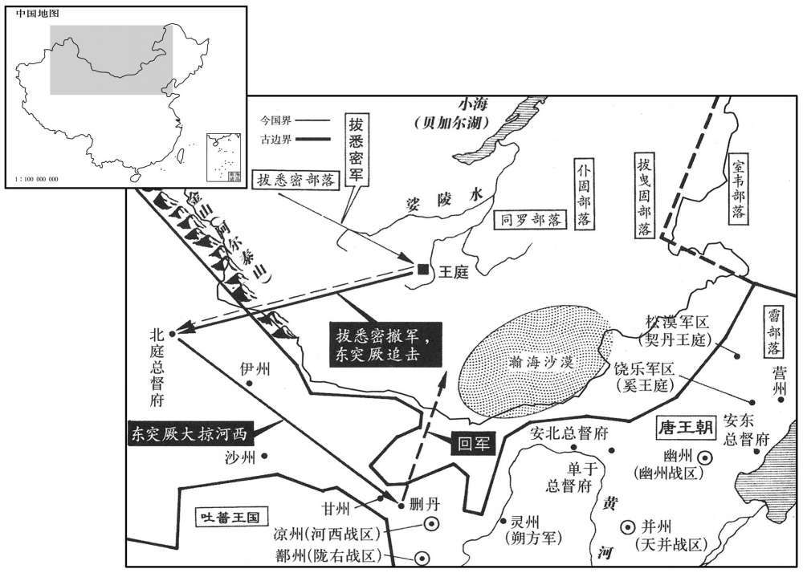
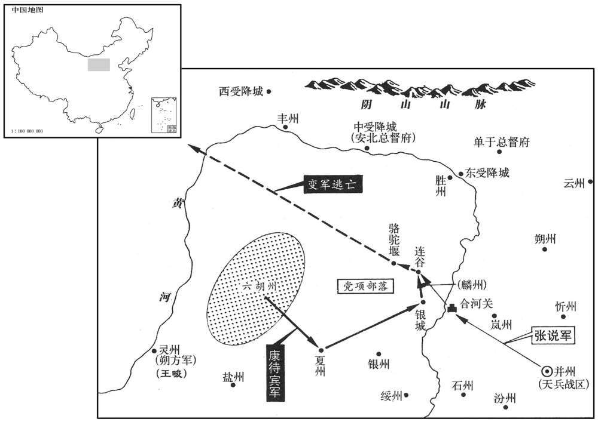
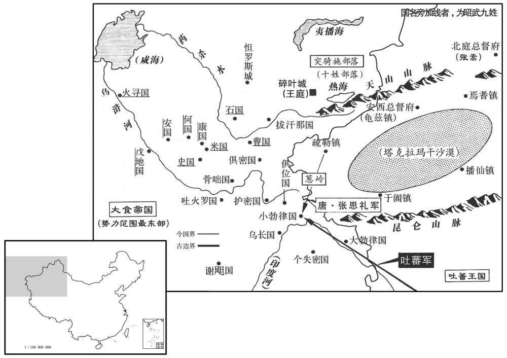
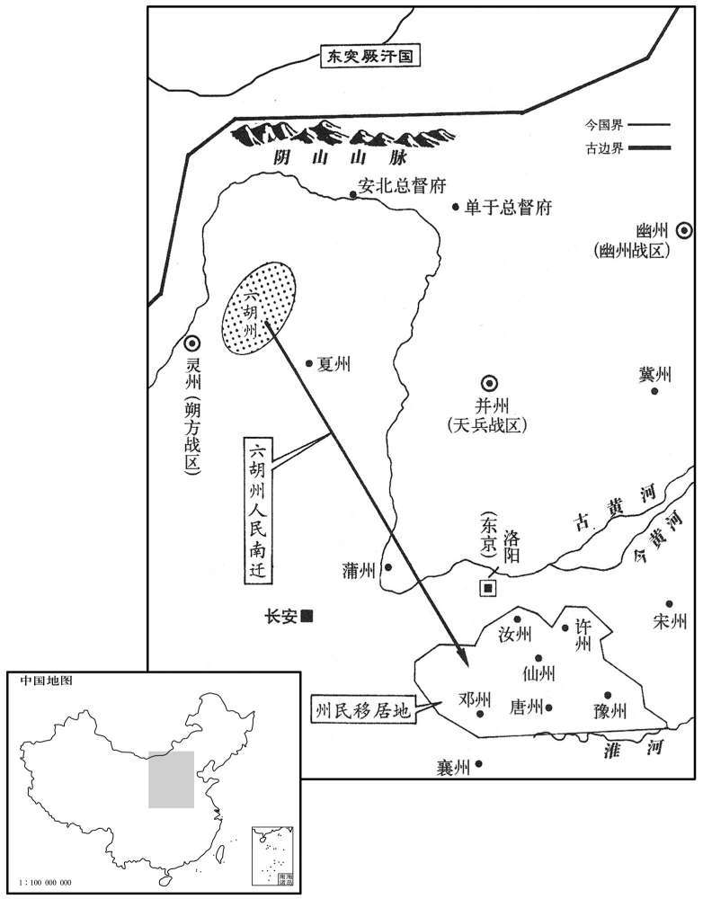
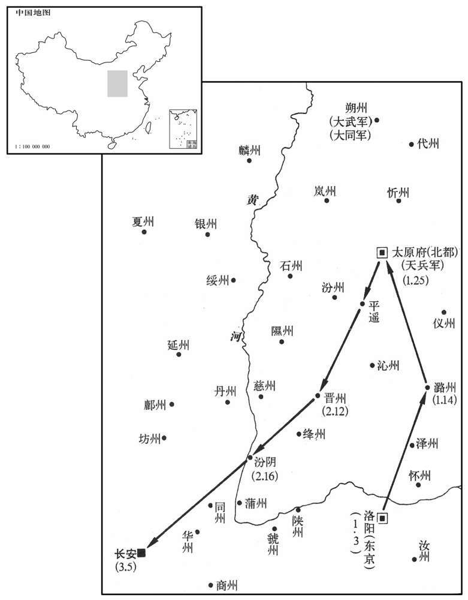
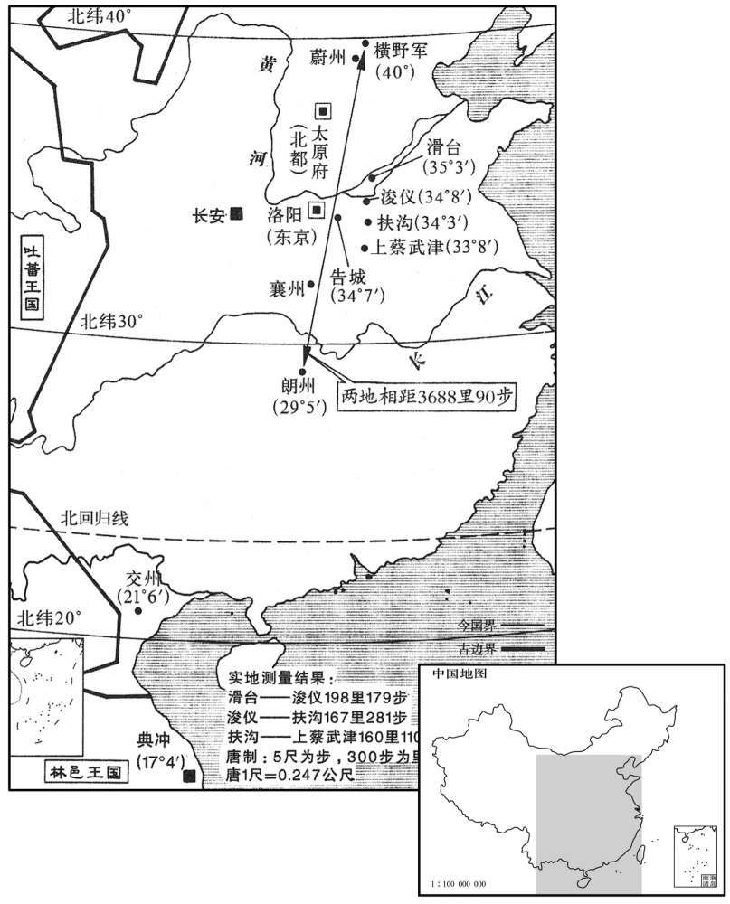
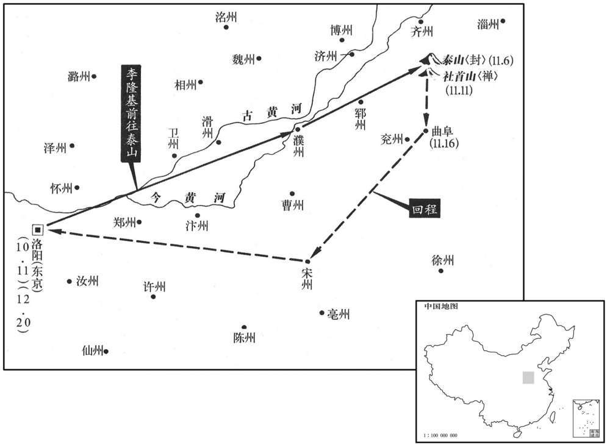

卷次与人物目录 / 卷212
资治通鉴 · 卷第二百一十二【唐纪二十八】
公元718年至公元725年 · 原文、白话与胡三省注
本页按胡注本编排保存全卷内容。白话采用本站所据译本，未可靠对应的内容另列说明；事件标题用于定位，并非原书文字。
本卷共169段原文，154段有译文对应，15段缺译或待核对。
卷第二百一十二【唐纪二十八】起着雍敦牂（戊午），〕尽旃蒙赤奋若（乙丑），凡八年。
卷首原文与注释
玄宗至道大圣大明孝皇帝上之下
公元718年 · 唐玄宗至道大圣大明孝皇帝开元六年
开元六年〔（戊午、七一八）〕
上传原文的注释括号有异常，字符原样保留；无法可靠划分的段落默认全文显示。
本年事件索引（现代整理）
春，正月，辛丑，突厥毗佑可汗来请和；许之。〔厥，九勿翻。伽，求迦翻。可，从刊入声。汗，音寒。
本段缺少可靠对应白话，原文完整保留；未使用生成译文。
广州史民为宋璟立遗爱碑。〔去年宋璟自广洲入相。为，于伪翻。璟，居永翻。〕璟上言：「臣在州无他异迹，今以臣光宠，成彼谄谀；欲革此风，望自臣始，请敕下禁止。」〔上，时掌翻。下，遐稼翻。〕上从之。于是他州皆不敢立。
广州的官吏百姓为宋修建遗爱碑。宋向玄宗进言说：“臣任广州都督期间并无优异的政绩，现在由于臣地位显耀，才造成那些人的阿谀奉承；要革除这种恶劣的风气，希望从臣这儿开始，请陛下降敕禁止为臣立碑。”玄宗采纳了他的建议。于是其他各州都不敢再干立碑的事。
辛酉，敕柰恶钱，〔武德四年铸开元通宝钱。其后盗铸渐起，颢庆五年以恶钱多，官为市之，以一善钱售五恶钱。民间藏恶钱以待禁胣。干封以后，私钱犯法日轓，有以舟筏铸于江中者。诏所在纳恶钱，而奸亦不息。武后时，钱非穿穴及铁锡铜液，皆得用之，熟铜排斗沙涩之钱皆售。自是盗铸蜂起，吏莫能捕。先天之际，两京钱益滥，或镕锡模钱须臾百十，故禁之。〕重一铢四分以上乃得行。敛人间恶钱镕之，更铸如式钱。〔更，工衡翻。〕于是京城纷然，卖买残绝。宋璟、苏颋请出太府钱二万缗置南北市，以平价买百姓不售之物可充官用者，及听两京百官豫假俸钱，庶使良钱流布人间，从之。〔颋，他鼎翻。俸，芳用翻。〕
辛酉（二十六日），玄宗颁布敕命禁止质料低劣的私钱流通，规定只有重量在二铢四分以上的官钱才可以流通使用。又下令收缴民间的私钱，经熔炼之后铸成符合规格的钱。于是京师人心浮动，各项交易几乎停止。宋、苏请求让太府拿出二万缗钱来设立南北两市，用于以平价收购百姓手中的那些可供官府使用的滞销物品，同时允许东西两京文武百官预支官俸，以便使质量优良的官钱能够流通到民间去。唐玄宗采纳了他们的建议。
二月，戊子，移蔚州横野军于山北，〔杜佑曰；横野军在蔚州东北百四十里，去太原九百里。此盖指言开元所移军之地。蔚，纡勿翻〕。屯兵三万，为九姓之援；以拔曳固都督颉质略、同罗都督毗伽末啜、霫都督比言，回纥都督夷健颉利发、仆固都督曳勒歌等各出骑兵为前、后、、左右军讨击大使，〔颉，户结翻。啜，陟劣翻。霫，而立翻。骑，奇寄翻。吏，疏吏翻；下同。〕皆受天兵军节度。〔天兵军在荆州中。考异曰：实录：壬辰，制大举击突，厥，五都督及拔悉密金山道总管处木昆执米嗓、坚昆都督骨笃禄毗伽、契丹都督李失活、奚都督李大酺及默啜之子右贤王默特勒逾输等夷夏之师，凡三十万，并取朔方道行行军大总管王晙节度；」而于后俱不见出帅胜败。按虍年正月，突厥请和，帝有答诏；而二月伐之，恐无此事。旧纪及王晙、突厥传皆无此月出兵事。新突厥传云：「默棘连遣使请和，帝以不情，答而不许，俄下诏伐之，以王晙统之，其以八年并集稽落水上。」行兵贵密，不应前二年早先下诏，盖取实录附会旧传耳。〕有所讨捕，量宜追集；〔量，音良。〕无事各归部落营生，仍常加存抚。
二月，戊子（二十三日），玄宗下令将蔚州横野军移往山北，在此屯兵三万作为铁勒九姓的后援；任命拔曳固都督颉质略、同罗都督毗伽末啜、都督比言、回纥都督夷健颉利发、仆固都督曳勒歌等各率本部骑兵为前、后、左、右军讨击大使，均受天兵军调度指挥。遇有征讨追捕之事时，则根据需要征调集结；平安无事时，则散回各部落从事生产，并让官府经常安抚他们。
三月，乙巳，征嵩山处士卢鸿入见，〔见，贤遍翻。〕拜谏议大夫；鸿固辞。〔考异曰：旧传作「卢鸿一」，本纪、新传皆作「鸿」。按中岳真入刘君碑，云卢鸿撰，今从之。
本段缺少可靠对应白话，原文完整保留；未使用生成译文。
天兵军使张嘉贞入朝，〔朝，直遥翻。〕有告其在军奢僭及赃贿者，按验无状；上欲反坐告者，〔反坐者，以诬告人所得罪坐之。〕嘉贞奏曰：「今若罪之，恐塞言路，〔塞，悉则翻。〕使天下之事无由上达，愿特赦之。」其人遂得减死。上由是以嘉贞为忠，有大用之意。〔为张嘉贞入相张本。〕
天兵军使张嘉贞入朝参见皇帝，有人告发他在军中有奢侈僭越行为以及贪污受贿的现象，但经过调查之后发现纯属捏造。玄宗打算将诬告者反坐治罪，张嘉贞向玄宗上奏道：“如果陛下现在将告发我的人治罪，恐怕会堵住向朝廷进言的渠道，使各地的下情无法上达，因此臣希望陛下对此人特予赦免。”这个人于是被免除死罪。玄宗由此认为张嘉贞对朝廷忠心耿耿，内心里打算重用他。
有荐山人范知璇文学者，并献其所为文，〔璇，从宣翻。〕宋璟判之日：「观其良宰论，颇涉佞谀。〔良宰论盖称美当时宰相。〕山人当极语谠议，〔谠，音党。〕岂宜偷合苟容！文章若高，自宜从选举求试，不可别奏。」
有人推荐隐士范知精于文章之学，并且进献了他所作的文章。宋对他的文章评论道：“从他所作的《良宰论》来看，此人颇有佞谀之嫌。隐士应当尽情说出公正无私的议论，怎么能苟且迎合以求容身呢！假如他的文章真作得好，自然应该通过科举出仕，因此不可为他单独上奏。”
夏，四月，戊子，河南参军郑铣、朱阳丞郭仙舟投匦献诗，〔河南参军，河南府参军也。唐制：诸府州诸曹参军之外，又有参军事，掌出使赞导。新志注日：武德初，改行书佐曰行参军，寻又改曰参军事。朱阳汉弘农县南界地，后魏分置朱阳郡，属析州；后周废郡为县，陏属弘农郡，唐龙朔初属商州，万岁通天二年度属洛州。匦，居洧翻。〕敕日：「观其文理，乃崇道法；至于时用，不切事情。宜各从所好。」〔好，呼到翻。〕并罢官；度为道士。
夏季，四月，戊子（二十四日），河南府参军郑铣、朱阳丞郭仙舟投匦献诗，玄宗颁布敕书道：“从他们所献诗文的文理来看，可知他们尊崇道家的法度；至于说到在当代的用处，则与实际事务不相切合。应当让他们各从所好。”于是将二人一起免官，度为道士。
五月，辛亥，以突骑施都督苏禄为左羽林大将军、顺国公，充金方道经略大使。〔骑，奇寄翻。〕
五月，辛亥（十八日），唐玄宗任命突骑施都督苏禄为左羽林大将军、封为顺国公，派他出任金方道经略大使。
契丹王李失活卒，癸巳，以其弟娑固代之。〔契，欺讫翻，又音吃。娑，素何翻〕。
契丹王李失活去世，癸巳（疑误），唐玄宗指定他的弟弟娑固继任为契丹王。
秋，八月，颁乡饮酒礼于州县，令每岁十二月行之。〔唐乡饮酒之礼，刺史主人，先召致仕乡有德者谋之，贤者为宾，其次为众宾，与之行礼。县则令为主人，乡之老人年六十以上有德望者一人为宾，次一人为介，又其次为三宾，又其次为众宾。年六十者三豆，七十者四豆，八十者五豆，九十者及主人皆六豆。主、宾、仲、二宾、众宾既升，即席，工持瑟升自阶就位，鼓鹿鸣。卒歌，笙入立于堂下北面，奏南陔。乃间歌，歌南有嘉鱼，笙崇丘，乃合乐周南关睢、召南鹊巢。司正升自西阶，赞礼，扬觯，而戒之以忠孝之本，主、宾、介以下皆再拜。奠酬既毕，乃行无算爵，无算乐。〕
秋季，八月，玄宗下令在地方各州县颁布乡饮酒礼，决定在每年的十二月份举行。
唐初，州县官俸，皆令富户掌钱，出息以给之；息至倍称，多破产者。〔唐初，在京诸司官及天下官置公廨本钱，以典史主之，收赢十之七，富户幸免傜役，贫者破产甚众。称，音尺证翻。〕秘书少监崔沔上言，请计州县官所得俸，于百姓常赋之外，微有所加以给之。〔时沔请计户均出，每丁加升尺以给之。〕从之。
唐初州县官的官俸，都是让当地富户掌管公廨本金而后出利息支付，由于利息高至借一还二，故而有很多人倾家荡产。秘书少监崔沔建议根据州县官吏应得俸禄的总数，在百姓正常赋税之外稍微多收一些，以此来支付州县官的俸禄。玄宗采纳了他的建议。
冬，十一月，辛卯，车驾至西京。
冬季，十一月，辛卯（初一），唐玄宗抵达西京长安。
戊辰，吐蕃奉表请和，乞舅甥亲署誓文；〔吐蕃以尚文成公主，与唐为舅甥之国。吐，从暾入声。又令彼此宰相皆著名于其上。
两版字句有差异，建议核对原文。
戊辰（疑误），吐蕃赞普进表求和，希望两国君主亲自签署誓文，并且要求两国宰相也在誓文上签名。
宋璟奏：「括州员外司马李邕、仪州司马郑勉，并有才略文词，〔先天元年，避帝名，改箕州为仪州。〕但性多异端，好是非变；若全引进，则咎悔必至，若长弃捐，则才用可惜，请除渝硖二州刺史。」又奏：「大理卿元行冲素称才行，初用之时，实允佥议；当事之后，颇非称职，请复以为左散骑常侍，以李朝隐代之。〔好，呼到翻。行，下孟翻。称，尺证翻。复，扶又翻。散，悉亶翻。骑，奇寄翻。朝，直遥翻。〕陆象先闲于政体，宽不容非，请以为河南尹。」从之。
宋上奏道：“括州员外司马李邕和仪州司马郑勉均有才能和谋略，又擅长文章，但两人思想中又多异端邪念，好改变公认的是非准则。假如完全提拔重用，则必定会招来祸害，若是将他们长期弃置不用，则才干被埋没又很可惜。请陛下将他们分别任命为渝、硖二州刺史。”宋还上奏道：“大理寺卿元行冲一向被认为才行俱佳，上任初期也确实与大家的议论一致，但在具体处理了一些问题之后，却发现并不称职，请求陛下仍让他任左散骑常侍，任命李朝陷代任大理寺卿之职。陆象先熟悉施政的要领，为政宽厚而不能容忍失误，，请陛下将他任命为河南尹。”唐玄宗对这些建议都一一采纳。
译本中未与胡注本可靠对应的内容
以下另列供核对版本差异，不并入胡注本正文。
译本所附古文
[1]春，正月，辛丑，突阙毗伽可汗来请和；许之。
译本白话
春季，正月，辛丑（初六），突阙毗伽可汗前来请求与唐和解；玄宗表示同意。
译本所附古文
[5]三月，乙巳，征嵩山处士卢鸿入见，拜谏议大夫；鸿固辞。
译本白话
三月，乙巳（初十），唐玄宗征召嵩山处士卢鸿入朝并任命他为谏议大夫；卢鸿坚决推辞。
公元719年 · 唐玄宗至道大圣大明孝皇帝开七年
七年〔（己未、七一九）〕
上传原文的注释括号有异常，字符原样保留；无法可靠划分的段落默认全文显示。
本年事件索引（现代整理）
春，二月，俱密王那罗延、〔俱密国治山中，在吐火罗东北，南临黑河；其王，突厥延陀种。〕康珏乌勒伽、安王笃萨波提〔杜佑曰：康国在米国西南三百余里，汉康居国也。萨，桑葛翻。〕皆上表言为大食所侵掠，乞兵救援。
春季，二月，西域的俱密王那罗延、康王乌勒伽、安王笃萨波提均上表玄宗，告知受到大食军队的侵掠，请求唐朝派兵救援。
敕太府及府县出粟十万石粜之，〔府，谓京兆府；县，谓京县及畿县也。粜，他吊翻。以敛人间恶钱，送少府销毁。
两版字句有差异，建议核对原文。
唐玄宗敕令太符和京兆府以及京府所辖各县拿出十万石粟出售，以便收回民间私铸的劣质钱，交少府监销毁。
三月，乙卯，以左武卫大将军、检校内外闲貛使、苑内营田使王毛仲行太仆卿。〔唐初以尚乘局掌内外闲貛之马十二闲；既置内外闲貛使专掌御马，因以尚乘局隶闲貛使，苑内诸监本隶司农寺，今亦隶苑内营田使。〕毛仲严察有干力，万骑功臣、闲貛官吏皆惮之，〔骑，奇寄翻。〕苑内所收常丰溢。上以为能，故有宠。虽有外第，常居闲貛侧内宅，上或时不见，则悄然若有所失；宦官杨思勖、高力士皆畏避之。
三月，乙卯（二十六日），唐玄宗任命左武卫大将军、检校内外闲厩使、苑 内营田使王毛仲担任太仆寺卿。王毛仲谨严精明，有才干能力，万骑军中的有功之臣和闲厩官吏都俱怕他，苑中的收入一般很丰盛。唐玄宗认为他很有才干，因此受到了玄宗的宠爱。王毛仲虽然在外面有宅第，却常常住在宫内闲厩旁边的宅中，有时玄见宗不到他，就会感到若有所失。宦官杨思勖和高力士都对他十分敬畏。
勃海王大祚荣迕；〔考异日：实录：「六月，丁卯，祚荣迕，遣左监门率吴思谦摄鸿胪卿，充使吊祭。」按此月丙已去祚荣迕；盖六月方遣思谦吊祭耳。〕丙辰，命其子武艺袭位。
勃海王大祚荣去世；丙辰（二十七日），玄宗敕命其子大武艺继位。
夏，四月，壬午，开府仪同三司祁公王仁皎薨。其子驸马都尉守一请用窦孝谌例，筑坟高五丈二尺；〔宝考谌，上外祖也。谌，氏壬翻。〕上许之。未璟、苏颋固争，以为：「准令，一品坟高一丈九尺，高，居号翻。其陪陵者高出三丈而已。窦太尉坟，议者颇讥者颇讥其高大，当时无人极言其失，岂可今日复踵而为之！〔复，扶又翻；下蕃复同。〕昔太宗嫁女，资送过于长公主，魏征进谏，太宗既用其言，文德皇后亦赏之，〔事见一百九十四卷太宗贞观六年。长，知两翻。〕岂若韦庶人崇其父坟，号日酆，〔事见二百八卷中宗景龙元年。〕以自速其祸乎！夫以后父之尊，欲高大其坟，何足为难！而臣等再三进言者，盖欲成中宫之美耳。况今日所为，当传无穷，永以为法，可不慎乎！」上悦曰：「朕每欲正身率下，况于妻子，何敢私之！然此乃人所难言，卿能固守典礼，以成朕美，垂法将来，诚所望也。」赐璟、颋帛四百匹。
夏季，四月，壬午（二十四日），开府仪同三司祈公王仁皎去世。其子驸马都尉王守一请求援用窦孝谌的先例，修筑五丈二尺高的坟墓，玄宗答应了他的请求。宋、苏对此坚决反对，他们认为：“根据令的规定，一品官坟墓的高度为一丈九尺，埋葬在皇帝陵墓附近的陪陵也不过高出三丈而已。窦太尉的坟修好后，街谈巷议多指责它过于高大，只是当时无人坚持指出它的过失罢了，现在怎能又重犯这样的错误呢！当初太宗皇帝送女儿长乐公主出嫁，所送嫁妆超过了长公主，魏徵加以谏阻，太宗采纳了他的意见，文德皇后也请求太宗赏赐魏徵，哪里像韦庶人尊崇其父的坟莹，称为酆陵，以致于自己加快祸患的到来呢！以皇帝之父的尊贵身分，如果想要将坟墓修得高大一些，又有什么困难呢！臣等对此之所以再三进谏阻止，不过是想成就王皇后的美名罢了。况且陛下今日所行之事，当传之无穷，永远为子孙所效法，怎么可以不谨慎从事呢！”玄宗听罢高兴地说：“朕一直想要以自身的正确行动，为下面的人作表率，哪里敢对自己的妻子儿女有所偏爱呢！但这事是一般人难以说出口的，您能够严格按照典法礼仪的规定办事，从而成就朕的美德并为后代子孙留下榜样，这正是朕所希望的。”赐给宋、苏绢帛四百匹。
五月，己丑朔，日有食之。上素服以俟变，彻乐减膳，命中书、门下察系囚，赈饥乏，劝农功。〔赈，津忍翻。〕辛卯，宋璟等奏曰：「陛下勤恤人隐，此诚苍生之福。然臣闻日食修德，月食修刑；亲君子，远小人，绝女谒，除谗慝，所谓修德也。君子耻言浮于行，〔论语孔子曰：「加子耻其言而过其行。」远，于愿翻。慝，吐得翻。行，下孟翻。〕苟推至诚而行之，不必数下制书也。」〔数，所角翻。下遐稼翻。〕
五月，己丑朔（初一），出现日食。唐玄宗身着素服，以等待太阳恢复常态，并让人撤去悬挂着的乐器，降低膳食的规格，又责成中书、门下两省复查被拘押的囚犯，开仓赈济饥民，勉励百姓勤于农事。辛卯（初三），宋等人上奏道：“陛下勤于抚恤百姓的痛苦，这实在是天下苍生的福分。但是臣还听说天子在出现日食时应当修德，在出现月食时则应当整饬刑罚；亲近君子，疏远小人，堵塞后宫请托之途，斥退邪恶之人，这就是我们所说的修德，君子以说得多做得少为耻，倘若陛下诚心修德，就不必屡降制书加以强调了。”
六月，戊辰，吐蕃复遣使请上亲署誓文；上不许，曰：「昔岁誓约已定，苟信不由衷，亟誓何益！」〔用左传语意。吐，从暾入声。复，扶又翻。亟，去吏翻〕
六月，戊辰（十一日），吐蕃又派遣使者入朝，请求唐玄宗亲笔签署两国和解的誓文，玄宗没有同意，说：“两国和解的盟誓在去年就已签订了，倘若守信并非出自内心，多次立誓又能有什么用处呢！”
秋，闰七月，右补阙卢履冰上言：「礼，父在为母服周年，则天皇后改服齐衰三年，〔事见二百二卷高宗上元元年。为，于伪翻。齐，音咨。衰，仓回翻。上，时掌翻。〕请复其旧。上下其议。〔下，遐嫁翻。〕左散骑常侍褚无量以履冰议为是；诸人争论，连年不决。八月，辛卯，敕自今五服并依丧服传文，〔散，悉亶翻。骑，奇寄翻。传，直恋翻。传直恋翻。〕然士大夫议论犹不息，行之各从其意。无量叹曰：「圣人岂不知母恩之厚乎﹖厌降之礼，厌，于謟翻。〕所以明尊卑、异戎狄也。俗情肤浅，不知圣人之心，一紊其制，谁能正之！」〔紊，音问。〕
秋季，闰七月，右补阙卢履冰进言：“依礼的规定，父在，子为亡母服一年丧，则天皇后却将这改为服三年丧，希望陛下能恢复原有的规定。”玄宗将他的建议交给群臣讨论。左散骑常侍褚无量认为履冰的建议正确；但对这一问题的争议，持续了一年多也没有定论。八月，辛卯（初六），玄宗颁布敕令，决定从今以后五服均以《丧服传》的规定为准，但士大夫们仍然议论纷纷，执行时则各行其是。褚无量深有感慨地说：“圣人哪里是不清楚慈母恩情的深厚呢？之所以又定下减少服丧期的礼节，是为了表明尊卑地位的不同，并以此与戎狄区别开来，世俗的感情肤浅，未能了解圣人制礼的用心，这种定制一经打破，谁还能加以匡正呢！”
九月，甲寅，徙宋王宪为宁王。〔四年，成器更名宪。〕上尝从复道中见卫士食毕，弃余食于窦中，怒，欲杖杀之；左右莫敢言。宪从容谏日：「陛下从复道中窥人过失而杀之，臣恐人人不自安。且陛下恶弃食于地者，为食可以养人也；〔宪从，千容翻。恶，乌路翻。为，于伪翻。〕今以余食杀人，无乃失其本乎！」上大悟，蹶然起曰：「微兄，几至滥刑。」几，居希翻。遽释卫士。是日，上宴饮极欢，自解红玉带，并所乘马以赐宪。
九月，甲寅（疑误），玄宗将宋王李宪改封为宁王。有一次玄宗在楼阁之间的天桥上发现卫士将吃剩的饭菜倒在坑穴中，感到非常生气，想要将这个卫士用刑杖活活打死。玄宗身边的人没有敢说话的。李宪不慌不忙地规劝道：“陛下从天桥上偷偷地发现他人的过失，就要将其处死，臣担心这样做会使得人人自危。再说陛下憎恶他人将饭菜倒在地上，是因为饭菜能够养活人，如果现在因为一点点剩饭剩菜就要杀人，恐怕与陛下的本意不符吧！”玄宗恍然大悟，急忙站起来回答说：“幸亏有了皇兄的规谏，否则几乎要滥用刑罚了。”说完赶忙将卫士释放。在这一天的宴席上，玄宗极为高兴，亲自解下自己的红玉带，连同自己所乘的坐骑一起赏赐给李宪。
冬，十月，辛卯，上幸骊山温汤；癸卯，还宫。〔骊，力知翻。还，从宣翻，又音如字。〕
冬季，十月，辛卯（初七），唐玄宗来到骊山温泉；癸卯（十九日），玄宗返回宫中。
壬子，册拜突骑施苏禄为忠顺可汗。〔可从刊入声。汗，音寒〕。
壬子（二十八日），唐玄宗册拜突骑施酋长苏禄为忠顺可汗。
十一月，壬申。〔【章：十二行本「申」下有「契丹王李婆固与公主入朝」十一字；乙十一行本司，惟「婆」作「娑」；孔本同；张校同，「固」作「圉」；退斋校本仍作「固」。】〕上以岐山令王仁琛，岐山县，隋置，属岐州。琛，丑林翻。〕藩邸故史，墨敕令与五品官。宋璟奏：「故旧恩私，则有大例，除官资历，非无公道。仁琛向缘旧恩，已获优改，今若再蒙超奖，遂于诸人不类；又是后族，〔王仁琛，盖仁皎群从。〕须杜舆言。〔舆，众也。乞下史部检勘，苟无负犯，于格应留，请依资稍优注拟。」从之。
两版字句有差异，建议核对原文。
十一月，壬申（十八日），唐玄宗未与外廷朝臣商议，便直接用墨敕将岐山县县令王仁琛擢升为五品官，原因是王仁琛原来是玄宗作藩王时的王府故吏。宋向玄宗上奏道，陛下对亲朋故旧所能给予的私情和恩惠，有一些基本的规矩，授官的资历，也不是没有一些公正的准则。过去王仁琛已经由于陛下的私恩得到了优于他人的任命，现在如果再次得到破格提拔，就会和那些与他资历相当的人相差太远；况且王仁琛又是皇后的同族，陛下行事时尤其应当考虑到公众的舆论。臣请求陛下将此事交由吏部核查勘验，如果王仁琛没有什么失误欠缺，按规定应予任命，臣请求根据他的资历略从优授给官职。”唐玄宗对此表示同意。
选人宋元超于吏部自言侍中璟之叔父，冀得优假。璟闻之，牒吏部云：「元超，璟之三从叔，〔三从，同高祖。下，遐嫁翻。选，须绢翻。从，才用翻。〕常在洛城，不多参见。〔见，贤遍翻。〕既不敢缘尊辄隐，又不愿以私害公。向者无言，自依大例，既有声听，事须矫枉；请放。」〔元超冀得饶假，今乃不得留注，所谓矫枉过正也。
两版字句有差异，建议核对原文。
候选的官员宋元超在吏部自称是侍中宋的叔父，希望因此能得到关照。宋得知此事后，发文书给吏部说：“宋元超是我同高祖的叔父，由于他定居在洛城，因而未能经常前去参见。我既不敢因为他是长辈就为之隐瞒，又不愿以私害公。以往他没有提出这层关系，吏部自然可以照章办事，现在他既然已把我们的关系声张出去，那么就必须矫枉过正了，请不要录用他。”
宁王宪奏选人薛嗣先请授微官，事下中书、门下。选，须绢翻。事下，遐嫁翻。璟奏：「嗣先两选斋郎，虽非灼然应留，以懿亲之故，固应微假官资。在景龙中，常有墨敕处分，谓之斜封。〔处，昌吕翻。分，扶问翻。〕自大明临御，兹事杜绝，行一赏，命一官，必是缘功与才，皆历中书、门下。至公之道，唯圣能行。嗣先幸预姻戚，不为屈法，许臣等商量，望付吏部知，不出正敕。」从之。〔量，音良〕
宁王李宪奏请授给候选官员薛嗣先一个小官。玄宗将此事交给中书省和门下省处理。宋上奏道：“薛嗣先曾两次被任命为斋郎，虽说他并非明显应该留任，但考虑到是至亲的缘故，本来应当大小任命一个职位。景龙年间，皇帝经常用墨敕直接除授官职，这些人被称为斜封官。自从陛下登基以来，所有这些弊端均已革除，朝廷每颁布行一次封赏，每任命一个官职，全都是由于这些人立下了功劳，或者是由于才能出众，而且都必须通过中书、门下二省。像这样的至公之道，唯有圣明君主才能真正实施。薛嗣先是陛下的姻亲，陛下并未法外施恩，而是将这个问题交由臣等商量，臣请求将此事交由吏部具体处理，不要直接正式降敕任命。”唐玄宗对此表示同意。
先是，朝集使往往斋货入京师，〔先，悉荐翻。〕及春将还，多迁官，宋璟奏一切勒还以革其弊。
在此之前，来自各州的朝集使们往往携带很多礼物进京打点，等到来年开春即将返回时，大多得到升迁；宋奏请玄宗将这些人一律原职遣还以便革除这一弊端。
是岁，置剑南节度使，领益、彭等二十五州。
在这一年，朝廷设置了剑南节度使，统辖益州、彭州等二十五州。
公元720年 · 唐玄宗至道大圣大明孝皇帝开八年
八年〔（庚申，七二〇）〕
上传原文的注释括号有异常，字符原样保留；无法可靠划分的段落默认全文显示。
本年事件索引（现代整理）
- 褚无量去世，元行冲奉命整理藏书
- 宋璟命令将持续诬告者交御史台审理
- 宋璟、苏颋严禁恶钱，因扰民而罢相
- 皇子李敏去世，追封怀王
- 玄宗缩短卫士服役年限
- 乌长、骨咄、俱位三王因拒绝大食劝诱获册封
- 恢复十道按察使
- 源乾曜任侍中，张嘉贞任中书令
- 源乾曜自请调出两个儿子，百余官员随之外任
- 张嘉贞引荐的四名官员因招权而受讥
- 瀍水、谷水暴涨，淹死近二千人
- 王晙诱杀仆固、跌部落首领，张说安抚余部
- 玄宗巡幸长春宫并在下邽狩猎
- 玄宗禁止诸王与群臣私下交结
- 玄宗返回京师
- 突厥侵扰甘州、凉州，击败杨敬述并掠走契苾部众
- 朔方军事计划因张嘉贞与王晙不和而未能落实
- 拔悉密独自进攻突厥牙帐，遭暾欲谷击败
- 暾欲谷攻掠凉州，唐军追击再败
- 可突干杀李娑固、李大酺，契丹奚部首领更替
春，正月，丙辰，左散骑侍褚无量卒。〔按通鉴例，惟公辅书薨，偏王者公辅书卒。今书褚无量卒以整比群书未竟，改命元行冲，故书以始事。考异曰：旧本纪：「正月甲子朔，皇太子加元服；壬申，右散骑常侍褚无量卒」按长历，正月申寅朔；甲子十一日也。唐历亦云，「壬申无量卒。」今从实录。〕辛酉，命右散骑常侍元行冲整比群书。〕比，毗至翻。〕
春季，正月，丙辰（初三），左散骑常侍褚无量去世。辛酉（初八），唐玄宗委派右散骑常侍元行冲主持整理文献典籍工作。
侍中宋璟疾负罪而妄诉不已者，悉付御史台治之。〔治，直之翻。〕谓中丞李谨度曰：南方有人长二三尺，袒身，目在顶上，走行如风，其名曰魃，所见之国大旱，赤地千里。一名旱母，遇者得之，投溷中即死。〕优人作魃状戏于上前，问魃：「何为出﹖」对曰：「奉相公处分。」〔相，息亮翻。处，昌吕翻。分，扶问翻。〕又问：「何故﹖」魃曰：「负冤者三百余人，相公悉以系狱抑之，故魃不得不出。」上心以为然。
本段缺少可靠对应白话，原文完整保留；未使用生成译文。
时璟与中书侍郎、同平章事苏颋建议严禁恶钱，江、淮间恶钱尤甚，璟以监察御史萧隐之充仗括恶钱。〔监，工衔翻。使，疏史翻。〕隐之严急烦扰，怨嗟盈路，上于是贬隐之官。辛巳，罢璟为开府仪同三司，颋为礼部尚书。〔考异曰：唐历云「二十八日辛卯」，旧纪云「己卯」。按是月无辛卯。今从实录。〕以京兆尹源干曜为黄门侍郎，并州长史张嘉为中书侍郎，并同平章事。于是弛钱禁，恶钱复行矣。〔复，扶又翻。〕
这时宋又和中书侍郎、同平章事苏一起建议严厉禁止私铸的劣质钱流通，鉴于江、淮之间劣质钱尤其泛滥，宋派监察御史萧隐之作为使者前往该地搜查劣质钱。萧隐之执法严酷，所到之处鸡犬不宁，百姓怨声载道，玄宗因此将萧隐之贬官。辛巳（二十八日），玄宗将宋罢免为开府仪同三司，苏罢免为礼部尚书，任命京兆尹源乾曜为黄门侍郎，并州长史张嘉贞为中书侍郎，二人都担任同平章事。于是朝廷对劣质钱的查禁大为放松，劣质钱再次泛滥。
二月，戊戌，皇子敏卒，追立为怀王，〔此怀王以州为国号。〕谥日哀。
二月，戊戌（十五日），皇子李敏去世，玄宗将他追立为怀王，赠谥号为“哀”。
壬子，敕以役莫重于军府，一为卫士，六十乃免，宜促其岁限，使百姓更迭为之。〔更，工衡翻。〕
壬子（二十九日），唐玄宗发布敕令，认为在百姓所负担的各种劳役之中，没有哪一种比兵役更为繁重，一旦被征为卫士，就只有到六十岁才能解脱，因此规定缩短兵役年限，让百姓轮流当兵。
夏，四月，丙午，遣使赐乌长王、骨咄王、俱位王册命。三国皆在大姇之西。〔乌长即乌苌，又曰乌荼。骨咄在镬沙庂东，或日阿咄罗，治思助建城。俱位，或曰商弥，治阿赊﨩师多城，在大雪山勃律河北，地寒，冬窟室。咄，当没翻。〕大食欲诱之叛唐，〔诱，音酉。〕三国不从，故褒之。
夏季，四月，丙午（二十四日），唐玄宗派使者向乌长王、骨咄王、俱位王颁发册命。上述三国均在大食以西之地。大食曾引诱他们背叛唐朝，三国均未同意，所以玄宗特加褒赏。
五月，辛酉，复置十道按察使。〔罢按察见上卷五年。〕
五月，辛酉（初九），朝廷又一次设置十道按察使。
丁卯，以源干曜为侍中，张嘉贞为中书令。
丁卯（十五日），唐玄宗任命源乾曜为侍中，任命张嘉贞为中书令。
干曜上言：「形要之家多任京官，使俊父之士沈废于外。〔沈，持林翻。〕臣三子皆在京，请出其二人。」上从之。因下制称干曜之公，命文武官效之，于是出者百余人。
源乾曜进言：“现在出身于权贵之家的人大多在京师任官，德高望重之士反在京外任职。臣有三个儿子，均在京城任官，请陛下将其中两个外放任职。”玄宗答应了他的请求，并颁下制命称赞源乾曜公正无私，命令文武百官向他学习，于是到京外任职的达一百余人。
张嘉贞吏事强敏，而刚躁自用。〔躁，则到翻。〕中书舍人曲延嗣、吕太一、考功员郎员嘉静，殿中侍御史崔训皆嘉贞所引进，常与之议政事。四人颇招权，时人语曰：「令公四俊，苗、吕、崔、员。」〔员，音运。〕
张嘉贞处理公务精明强干，只是性情急躁刚愎自用。中书舍人苗延嗣、吕太一、考功员外郎员嘉静和殿中侍御史崔训都是张嘉贞提拔任用的，张嘉贞也常与这四个人商议朝政大事。这四个人处处揽权，当时的人这样流传说：“中书令张公的四位俊才，是苗延嗣、吕太一、崔训和员嘉静。
六月，瀍、谷涨溢，漂溺几二千人。〔溺，奴狄翻。几，居希翻。考异曰：实录云「沶居人四百余家」。旧纪云：「漂没九百余户，溺死八百余人，掌闲溺死者千一百余人。」今从旧纪人数。按旧纪，「掌闲」之下有「番兵」二字。〕
六月，河和河发大水，淹死了将近二千人。
突厥降户仆固都督勺磨及硖跌部落散居受降城侧，〔降，户江翻。勺，职略翻。硖，奚结翻。跌，徒结翻。〕朔方大仗王晙言其阴引突厥，谋陷军城，密奏请诛之。诱勺磨等宴于受降城，伏兵悉杀之，河曲降户殆尽。拔曳固、同罗诸部在大同、横野军之侧者，闻之皆忷惧。〔大同军即大武军，武后大足元年更名。杜佑曰：在代州北三百里，去并州八百余里。晙，子峻翻。诱，音酉。忷，许拱翻。〕秋，并州长史、天兵节度大使张说吊二十骑，持节即其部落慰抚之，〔说，读曰悦。骑，奇寄翻。〕因宿其帐下；副仗李宪以虏情难信，驰书止之。说复书曰：「吾肉非黄羊，必不畏食；〔北人谓麆为黄羊。〕血非野，必不畏刺。〔非人家及貛牧所畜而自孳生于野者，谓之野马。〕士见危致命，〔论语载子张之言。〕此吾效死之秋也。」拔曳固、同罗由是遂安。
归降的突阙仆固都督勺磨以及跌部落人众散居在受降城周围，朔方大使王说他们暗地里勾结突阙，阴谋夺占唐军驻守的受降城，便密奏玄宗，请求将这些人诛杀。王诱使勺磨等人来到受降城内赴宴，下令预先埋伏好的士兵将这些人全部杀死，河曲之地的突阙降户也被诛戮殆尽。散居在大同、横野军附近的拔曳固、同罗等部落得知此讯，都非常恐惧。秋季，并州长史、天兵军节度大使张说仅带二十名骑兵，手执皇帝赐给的符节到拔曳固等部落慰问安抚，并在其牙帐之中过夜。天兵军节度副使李宪认为胡虏难以相信，派飞骑送信阻止。张说在给李宪的回信中说：“我身上长的并非黄羊之内，不怕他们会吃了我；我身上流的也不是野马的血，不怕他们会刺血而饮。士大夫临危当舍命报效，此刻正是我为陛下尽忠的时候。”拔曳固、同罗等部落因此而安下心来。
冬，十月，辛巳，上行卅长春宫；壬午，畋于下邽。
冬季，十月，辛巳（初二），唐玄宗到长春宫；壬午（初三），唐玄宗在下围猎。
上禁约诸王，不仗与群臣交结。光禄少卿驸马都尉裴虚己与岐王范游宴，仍私挟谶纬；〔谶，楚谮翻。纬，于贵翻。戊子，流虚己于新州，离其公主。〔睿宗女霍国公主，下嫁虚己。旧志：新州至京师五千五十二里。〕万年尉刘庭琦、太祝张谔〔唐太常寺有太祝六人，正九品上。〕数与范饮酒赋诗，贬庭琦雅州司户，谔山茌丞。〔山茌县，汉、晋属泰山，邵宋属东太原郡，隋废入济州长清县；武德元年分罝山茌县，属齐州。数，所角翻。〕然待范如故，谓左右曰：「吾兄弟自无间，但趋竞之徒强相托附耳。〔间，古苋翻。强，其两翻。〕吾终不以此责兄弟也。」上尝不豫，薛王业妃弟内直郎韦宾〔唐六典：东宫有内直局，内直郎二人，掌符玺、伞扇、几案、衣服之事，职拟尚辇奉御。〕与殿中监皇甫恂私议休咎；事觉，宾杖死，恂贬锦州剌史。武后垂拱二年以辰州麻阳县地及开山洞置锦州。〕业与妃惶惧待罪，上降阶执业手曰：「石若有心猜兄弟者，天地实殛之。」即与之宴饮，仍慰谕妃，令复位。
本段缺少可靠对应白话，原文完整保留；未使用生成译文。
十一月，乙卯，上还京师。
十一月，乙卯（初七），玄宗回到京师。
辛未，突厥寇甘、凉等州，〔凉州西至甘州五百里。考异曰：唐历，突厥寇凉州在九月。旧突厥传云：「八年冬，御史大夫王晙为朔方大总管，奏请西微拔悉密，东发奚、契丹两蕃，期以明年秋初，引朔方兵数道俱入，掩突厥牙帐于稽落河上。」按王晙此月为幽州都督，今从实录、旧纪。〕败河西节度仗杨敬述，〔败，补迈翻。〕掠契苾部落而去。〔贞观中，契苾来降，处其部落于凉州。契，欺讫翻。苾，毗必翻。
本段缺少可靠对应白话，原文完整保留；未使用生成译文。
先是，朔方大总管王唆奏请西发拔悉密，〔拔悉密酋长姓阿史那氏，盖亦突厥之种也，居北庭。先，悉荐翻。东发奚、契丹，期以今秋掩毗伽牙帐于稽落水上；〔稽落水盖导源稽落山。〕毗伽闻之，大惧。暾欲谷曰：「不足畏木。拔悉密在北庭，与奚、契丹相去绝远，劫不相及；朔方兵计亦不能来此。若必能来，俟其垂至，徒牙帐北行三日，唐兵食尽自去矣。且拔悉密轻而好利，〔轻，牵正翻。好，呼到翻。〕得王晙之约，必喜而先至。晙张张嘉贞不相悦，奏请多不相应，必不敢出兵。〔史言在廷在边之谋不謟，为夷狄所窥。晙兵不出，拔悉密独至，击而取之，势甚易耳。」〔易，以豉翻。〕
两版字句有差异，建议核对原文。
在此之前，唐朔方道大总管王奏请西调拔悉密部落兵马，东发奚、契丹兵马，约定在这一年的秋季掩袭突阙毗伽可汗设在稽落水附近的牙帐；毗伽可汗得知此讯后非常害怕。暾欲谷道：“这没什么可怕的。拔悉密尚在北庭，与奚、契丹相距太远，双方无法合兵相应；估计大唐朔方兵也无法抵达此地。即使唐军真的能来，等他们快要到时，只要我们迁徙牙帐向北走三天的路程，唐军粮尽自会退兵。再说拔悉密人轻浮而好利，这次又得到了王的允诺，一定会得意忘形，先行抵达此地。王与张嘉贞关系不好，他向朝廷提建议多数得不到响应，所以这次他必不敢出兵。既然王的唐军不来，只有拔悉密的军队前来，我们打败他也就易如反掌了。”
既而拔悉密困发兵逼突厥牙帐，而朔方及奚、契丹兵不至，拔悉密惧，引退。毗伽欲击之，暾欲谷曰：「此属去家千里，将死战，未石击也。不如以兵蹑之。」去北庭二百里，暾欲谷分兵间道先围北庭，〔间，古苋翻。〕因纵兵击拔悉密，大破之。拔悉密众溃走，，趋北庭，不得入，趋，逡喻翻。〕尽为突厥所虏。
不久拔悉密果然发兵前来进逼突阙毗伽的牙帐，而且朔方以及奚、契丹的兵马并未如约抵达，拔悉密人心中掠惧，赶忙撤军。毗伽可汗打算派兵攻打他们，暾欲谷道：“这些人离家千里，一定会拼死战斗的，我们不能在这时就进攻他们。我们不如派兵紧随其后。”在拔悉人撤至离北庭二百里左右的时候，暾欲谷才分兵抄小路先包围了北庭，然后纵兵相攻，打败了拔悉密的军队。拔悉密人被击溃后逃往北庭，又因无法入城而全部被突阙俘虏。

暾欲谷引兵，还出赤亭，掠凉州羊马，杨敬述遣裨将卢公利、判官元澄将兵邀击之。〔将，即亮翻。暾欲谷谓其众曰：「吾乘胜而来，敬述出兵，破之必矣。」公利等至删丹，〔删丹县，汉属张掖郡，后汉、晋属西郡，后魏曰山丹，隋复曰删丹，属甘州。与暾欲谷遇，唐兵大败，公利、澄脱身走。毗伽由是大振，尽有默啜之众。
两版字句有差异，建议核对原文。
暾欲谷率军回撤，由赤亭出兵，抢掠凉州的羊群马匹，杨敬述派裨将卢公利和判官元澄率兵拦击突厥。暾欲谷对他的部队说：“我们乘胜来到这里，倘若杨敬述出兵挑战，就一定能够击败他们。”卢公利等人在删丹县与暾欲谷相遇，交战后唐军一败涂地，卢公利和元澄脱身逃回。毗伽的势力因此而大振，控制了默啜可汗的所有人马。
契丹牙官可突干骁勇得众心，李娑固猜畏，欲去之。〔骁，坚尧翻。娑，素何翻。去，羌吕翻。〕是岁，可突干举兵击娑固，娑固败奔营州。营州都督许钦澹遣安东都护薛泰帅骁勇五百与奚王李大酺奉娑固以讨之，战败，娑固、李大酺皆为可突干所杀，帅，读曰率。酺，音蒲。〕生擒薛泰，营州震恐。许钦澹移军入汽关，可突干立娑固从父弟郁干为主，遣使请罪。上赦可突干之罪，以郁干为松漠都督，以李大酺之弟鲁苏为饶乐都督。〔使，疏吏翻；下同。乐，音洛。
契丹牙官可突干骁勇善战，深得属下信赖，李娑固对他既猜忌又害怕，试图将他铲除。在这一年，可突干率兵进攻李娑固，李娑固作战失利，逃往营州。营州都督许钦澹派安东都护薛泰率五百精兵与奚王李大一起辅助李娑固回兵征讨可突干，又被可突干击败，李婆固、李大二人均被可突干杀死，薛泰被俘，营州军民对此大为震惊。许钦澹被迫率部撤入渝关，可突干拥立李娑固的堂弟李郁干为王，并派遣使者入朝请罪。唐玄宗赦免了可突干的罪，任命李郁干为松漠都督，任命李大的弟弟李鲁苏为饶乐都督。
译本中未与胡注本可靠对应的内容
以下另列供核对版本差异，不并入胡注本正文。
译本所附古文
[2]侍中宋疾负罪而妄诉不已者，悉付御史台治之。谓中丞李谨度曰：“服不更诉者出之，尚诉未已者且系。”由是人多怨者。会天旱有，优人作状戏于上前，问：“何为出？”对曰：“奉相公处分。”又问：“何故？”曰：“负冤者三百余人，相公悉以系狱抑之，故不得不出。”上心以为然。
译本白话
侍中宋很厌恶那些明明有罪却没完没了地四处告状的人，便将这些人全都交付御史台治罪。他对御史中丞李谨度说：“你应当将那些已认罪不再上诉的人释放，把那些还在不停地申诉的人先关起来。”所以很多人怨恨他。正赶上旱神作怪，天下大旱，宫中演滑稽戏的俳优在玄宗面前扮作旱神模样演戏，其中一个演员问“旱神”道：“你为什么到人间来降灾呢？”“旱神”回答说：“我是奉了丞相的命令降临人间的。”又问：“这是为什么？”“旱神”接着回答：“蒙冤者达三百余人，丞相将他们全都关进监狱，借此压制他们，所以我不得不到人间降灾以示警告。”唐玄宗心中对此也有同感。
译本所附古文
[11]上禁约诸王，不使与群臣交结。光禄少卿驸马都尉裴虚己与岐王范游宴，仍私挟谶纬；戊子，流虚己于新州，离其公主。万年尉刘庭琦、太祝张谔数与范饮酒赋诗，贬庭琦雅州司户，谔山茌丞。然待范如故，谓左右曰：“吾兄弟自无间，但趋竞之徒强相托附耳。吾终不以此责兄弟也。”上尝不豫，薛王业妃弟内直郎韦宾与殿中监皇甫恂私议休咎；事觉，宾杖死，恂贬锦州刺史。业与妃惶惧待罪，上降阶执业手曰：“吾若有心猜兄弟者，天地实殛之。”即与之宴饮，仍慰谕妃，令复位。
译本白话
唐玄宗禁止诸王与群臣交结。光禄少卿驸马都尉裴虚己与岐 王李范一起游观宴饮，并且私自挟带谶纬之书；戊子（初九），唐玄宗将裴虚己流放到新州，并让霍国公主与他离婚。万年县尉刘庭琦和太常寺太祝张谔也因屡次与李范在一起饮酒赋诗而分别被贬为雅州司户和山茌县丞。但玄宗仍然像以往那样善待李范，他对左右侍臣说：“朕的兄弟自然没有问题，不过是那些趋炎附势的小人极力巴结而已。朕决不会因此而责怪自己的兄弟。”有一次玄宗生了病，薛王李业之妃的弟弟、内直郎韦宾与殿中监皇甫恂私议吉凶之事；事发后，韦宾被用刑杖打死，皇甫恂被贬为锦州刺史。李业与其妃子十分惶恐，只等着玄宗治罪了，唐玄宗走下台阶拉着李业的手说：“我如果有猜忌兄弟之心，天地不容。”并且与他一同入席饮酒，此外还好言安慰李业之妃，让他仍当王妃。
译本所附古文
[13]辛未，突阙寇甘、凉等州，败河西节度使杨敬述，掠契部落而去。
译本白话
辛未（二十三日），突阙进犯甘、凉等州，击败了唐河西节度使杨敬述，大肆掳掠了契部落之后撤走。
公元721年 · 唐玄宗至道大圣大明孝皇帝开九年
九年〔（辛酉、七二一）〕
上传原文的注释括号有异常，字符原样保留；无法可靠划分的段落默认全文显示。
本年事件索引（现代整理）
- 杨敬述被削官爵，以白衣代理凉州都督
- 蒲州改为河中府并设置中都官署
- 玄宗巡幸骊山温汤后回宫
- 宇文融建议核查逃户及隐田
- 毗伽可汗遣使求和，玄宗致书陈述条件
- 玄宗限期清查逃户、籍外田，新增八十余万户
- 康待宾率兰池州胡人叛乱，攻陷六胡州
- 京官及四府佐官须举荐县令人选
- 王毛仲任朔方道防御讨击大使
- 蒲州中都被撤销，恢复蒲州旧称
- 陆象先以宽简治蒲州，反对滥施杖刑
- 王晙击败康待宾并处决其部众
- 张说击败通胡叛军并安抚党项，不杀已降者
- 日食
- 王晙被贬，因未能平定胡部且与郭知运不和
- 姚崇去世，遗命子孙勿学僧道造像求福
- 张说任兵部尚书、同平章事
- 郭知运去世，王君㚟继任河西、陇右节度使
- 元行冲进献《群书四录》
- 玄宗大赦天下
- 玄宗巡幸骊山温汤后回宫
- 诸王不再出任都督、刺史，奉召回京
- 蒲津桥重建，以铁牛系缆
- 吴兢拒绝张说要求改写《则天实录》
- 玄宗命一行、梁令瓒重修历法并制观测仪
- 设置朔方节度使，统辖六州及边军
春，正月，制削杨敬述官爵，〔以删丹之败也。〕以白衣检校凉州都督，仍充诸使。〔诸使，谓节度、支度、营田等使也。〕
春季，正月，唐玄宗发布制命，削夺了杨敬述的官爵，让他以布衣身分任检校凉州都督，并且依旧让他充任节度、支度、营田等使。
丙辰，改蒲州为河中府，置中都官僚，一准京兆、河南。
丙辰（初七），唐玄宗下诏将蒲州改为河中府，设置中都官僚，员数、品级与京兆府和河南府相同。
丙寅，上幸骊山温汤；乙亥，还宫。
丙寅（十七日），唐玄宗来到骊山温泉；乙亥（二十六日）。玄宗回到宫中。
监察御史宇文融上言，天下户口逃移，巧伪甚众，请加检括。融，鹱之玄孙也，〔宇文鹱，见一百七十二卷陈宣帝太建七年。监，古衔翻。上，时掌翻。鹱，古鹱字。〕源干曜素爱其才，赞成之。二月，乙酉，敕有司议招集流移、按诘巧伪之法以闻。〔诘，去吉翻。〕
监察御史宇文融进言，认为全国各地民户人口流散逃移，弄虚作假现象十分普遍，希望加以核查。宇文融是宇文的玄孙，源乾曜向来喜欢他的才能，故而极为赞成他的建议。二月，乙酉（初八），玄宗敕令有关部门研究一下招集流散人口以及追查弄虚作假现象的办法，并将研究结果上奏。
丙戌，突厥毗伽复使来求和，上赐书，谕以「曩昔国家与突厥和亲，华、夷安逸，甲兵休；息国家买突厥羊马，突厥受国家缯帛，彼此丰给，自数十年来，不复如旧，正由默啜无信，口和心叛，数出盗兵，寇抄边鄙，人怨神怒，陨身丧元，复，扶又翻；下今复同。数，所角翻。丧，息浪翻。元，首也。斩默嗓，事见上卷四年。〕吉凶之验，皆可汗所见。今复蹈前迹，掩袭甘、凉，随遣使人，更来求好国家如天之覆，如海之容，〔好，呼到翻。覆，敷又翻。〕但取来情，不追往咎。可汗果有诚心，则共休遐福；不然，无烦使者徒尔往来。若其侵边，亦有以待。可汗其审图之！」
丙戌（初九），突厥可汗毗伽又派遣使者入朝请求和解。唐玄宗写给毗伽一封信，信中说：“过去大唐与突阙和亲，华夏人和突阙人安居乐业，两国军队也相安无事；大唐买进突厥的牛羊马匹，突厥则接受大唐的各种丝织品，双方都丰衣足食。最近几十年来，两国关系之所以不如往常，完全是由于默啜可汗言而无信，嘴里讲的是和亲，心里无时不想叛离，屡次派兵入侵，掠夺边疆地区百姓的财产，终致人怨神怒，自己被人杀死。善恶吉凶的报应，都是可汗亲眼所见。现在可汗又走上默啜的老路，先是入侵甘、凉二州，随后又派使者前来求和修好。我大唐如上天无不覆盖，如大海容纳一切，只看今后的情况，不追究从前的过错。可汗如果真有求和的诚意，则我们两国就能保持长久之福；否则就不必麻烦使者白白地往来走动。倘若突厥兵再次入侵，我大唐也早已做好了准备。何去何从，请可汗仔细考虑！”
丁亥，制：「州县逃妄户口听百日自首，或于所在附籍，或牒归故乡，各从所欲。过期不首，〔首，式又翻。〕即加检括，谪徙边州；公私敢容庇者抵罪。」以宇文融充使，括逃移户口及籍外田，所获巧伪甚众。〔使，疏吏翻。〕迁兵部员外郎兼侍御史。融奏置劝农判官十人，〔通典及新书并云二十九人，通典且列其姓名。〕并摄御史，分行天下。其新附客户，免六年赋调。〔调，徒吊翻。〕使者竞为刻急，州县承风劳扰，百姓苦之。阳翟尉皇甫憬上疏言其状；〔阳翟县，汉属颖川郡，晋属河南郡，后魏置阳翟郡，隋郡，隋废郡为县，属襄城郡，唐初属嵩州，贞观元年属许州，龙朔二年度属洛州为畿县。憬，居永翻。〕上方任融，贬憬盈川尉。州县希旨，务于获多，虚张其数，或以实户为客，凡得户八十余万，田亦称是。〔称，尺证翻。〕
丁亥（初十），唐玄宗颁下制命：“各州县逃亡的户口，允许在百日内自己主动申报，或在现在的住地编入户籍，或发文书回原籍申报户口，都可按自己的心愿办理。凡过期不报者，一经官府查出，一律迁徙到边远州县安置。官民人等如有隐藏包庇者，也照此处治。”任命宇文融充任朝廷使者，负责搜求逃亡流失的户口及清查隐瞒不服的田地，查出的弄虚作假现象非常多。宇文融因此被擢升为兵部员外兼侍御史。宇文融还奏请唐玄宗设置了十位劝农判官，都兼任代理御史，分头巡行全国各地。凡新近编入户籍的客户，均免除六年的赋调。各路使者在执法上竞相追求严峻苟刻，所在州县官吏又一味迎合使者，变本加厉地骚扰百姓，致使百姓苦不堪言。阳翟县尉皇甫憬上疏反映这一情况，由于玄宗正信任宇文融，所以皇甫憬反被贬职为盈川尉。州县官吏迎合上司的旨意，务求多得逃户，为此不惜虚报数量，甚至有的把户籍中原有的户也当作新增的客户呈报上去。此次共查出流失的民户八十余万，查出的被隐瞒土地的数目也与此基本相当。
兰池州胡康待宾诱诸降户同反，夏，四月，攻陷六胡州，〔诱，音酉。降，户江翻。高宗调露元年，于灵夏南境以降突厥置鲁州、丽州、含州、塞州、依州、契州，以唐人为刺史，谓之六胡州，长安二年并为匡、长二州，神龙三年置兰池都督府，分六州为县。宋曰：六胡州在夏州德静县北。考异曰：实录：「四月庚寅，康待宾反，命王晙讨平之，斩于都市。五月丁巳，既诛康待宾，下诏云云。壬寅，叛胡康符宾伪称叶护安慕容以叛，七月，己酉，王晙擒康待寡至京师，腰斩之。」前后重复，交错相违。今从旧纪。〕有众七万进逼夏州；〔夏，户雅翻。〕命朔方大总管王晙、陇右节度使郭知运共讨之。
兰池州的胡人康待宾诱使当地所有归降的人一同叛唐。夏季，四月，康待宾率部攻陷了六胡州，麾下已聚集了七万之众，并乘胜进逼夏州。唐玄宗命朔方大总管王和陇右节度使郭知运共同讨伐康待宾。

戊戌，敕；「京官五碞以上，外官刺史、四府上佐，〔四府，请京兆府、河南府、河中府、太原府。各举县命一人，视其政善恶，为举者赏罚。」
两版字句有差异，建议核对原文。
戊戌（二十日），唐玄宗发布敕命：“五品以上的京官，各州刺史及京兆、河南、河中、太原四府的府尹、少尹，每人向朝廷推荐一位县令，朝廷将根据其政绩的好坏对举荐者进行赏罚。”
以太仆卿王毛仲为朔方道防御讨击大使，与王晙及天兵军节度大使张说相知讨康待宾。
唐玄宗任命太仆寺卿王毛仲为朔方道防御讨击大使，与王及天兵军节度大使张说一同征讨康待宾。
六月，己卯，罢中都，复为蒲州。〔复，扶又翻。〕
六月，己卯（初三），唐玄宗废除中都，又改名为蒲州。
蒲州刺史陆象先政尚宽简使民有罪，多晓谕遣之。州录事言于象先曰：「明公不施棰挞，何以示威！！」〔唐上州置录事三人，正九品上，中下州各一人，下州从九品下，棰，止垂翻。〕象先日：「人情不远，此属岂不解吾言邪！〔解，户买翻，晓也。〕必欲棰挞以示威，当从汝始！」录事惭而退。象先尝谓人曰：「天下本无事，但庸人扰之耳。苟清其源，何忧不治！」〔治，直吏翻。〕
蒲州刺史陆象先为政崇尚宽厚简约，属下官吏百姓有罪，多当面用好言劝诫，然后让他们离开。蒲州录事对陆象先说：“明公不用刑杖，怎么能显示威风呢！”陆象先回答说：“人心都是相通的，难道这些人不理解我的话吗！如果你一定要我用刑杖来显示威风，那就应当从你开始！”录事十分惭愧，赶忙退出。陆象先曾对人说：“天下本无事，庸人自扰之。为政若能正本清源，何忧天下不治！”
秋，七月，己酉，王晙大康待宾，生擒之，杀叛胡万五千人。辛西，集四夷酋长，腰斩康待宾于西市。〔酋，慈由翻。长，知两翻。
两版字句有差异，建议核对原文。
秋季，七月，己酉（初四），王大败康待宾率领的叛军，生擒康待宾本人，击杀反叛的胡众一万五千人。辛酉（十六日），唐玄宗召集了四夷各部酋长，在西市将康待宾腰斩。
先是，叛胡潜与党项通谋，攻银城、连谷，据其仓庾，〔后周置银城县，后改日银城防。贞观四年以银城属银州，八年属胜州；又以隋连谷戌置连谷县，亦属胜州。杜佑曰：银城、连谷皆汉圁阴县地，汉光禄塞在今县北。先，悉荐翻。党，底朗翻。〕张说将步骑万人出合河关掩击，大破之。〕岚州合河县北有合河关。宋白曰：合河县城下有蔚汾水，西与沰合，故日合河。赵珣聚米图经：合河閞在府州南二百里。将，即亮翻。骑，奇寄翻。〕。追至骆驼堰，〔堰，于扇翻。〕党项乃更与胡战，胡众溃，西走入铁建山。说安集党项，使复其居业。讨击使阿史那献以党项翻覆，请并诛之，说曰：「王者之师，当伐叛柔服，岂可杀已降邪！」因奏置麟州，以镇抚党项余众。〔分胜州银城、连谷置麟州，又置新秦县为麟州治所。杜佑曰：麟州，汉新秦中地。〕
两版字句有差异，建议核对原文。
在这以前，叛军暗中与党项族合谋，准备攻打银城、连谷，占据该地的粮仓，张说率领一万名步兵和骑兵自合河关出其不意地向叛军发起攻击，叛军大败。张说又乘胜追击，一直追到骆驼堰。这时党项人反而攻击叛军，叛军溃不成军，向西逃入了铁建山。张说安抚党项人，让他们像过去一样地生产和生活。讨击使阿史那献认为党项人反复无常，请求将他们一起杀死，张说说：“圣王的仁义之师，应当讨伐叛逆，安抚归服之众，怎么能杀死已归降的人呢！”并上奏玄宗设置鳞州，以镇抚党项族余众。
九月，乙巳朔，日有食之。
九月，乙巳朔（初一），出现日食。
康待宾之反也，诏郭知运与王晙相知讨之；晙上言，朔方兵自有余力，请敕知运还本军。〔上，时掌翻。〕未报，知运已至，由是与晙不协。晙所招降者，知运复纵兵击之；虏以晙为卖己，由是复叛。〔降，户江翻。复，扶又翻。〕上以晙不能遂定群胡，丙午，贬晙为梓州刺史。〔梓州，汉郪、广汉、氐道之地，西魏、梁末置新州，隋改梓州。王晙贬官，未必离任也。如娄师德以素罗汗山之败贬，亦此类。〕
康待宾发动叛乱的时候，唐玄宗命令郭知运与王联合出兵征讨；王告诉玄宗，朔方军的兵力足够平叛之用，请玄宗命令郭知运撤回陇右。尚未等到回音，郭知运已率部抵达，因此两人关系出现裂痕。对那些已被王招降的胡人，郭知运也纵兵袭击；胡人认为王出卖了自己，因此纷纷重新叛唐。唐玄宗认为王未能平定胡人的叛乱，丙午（初二），将他贬为梓州刺史。
丁未，梁文献公姚崇薨，遗令：「佛以清净慈悲为本，而愚者写经造像，冀以求福。昔周、齐分据天下，周则毁经像而修甲兵，齐则崇塔庙而弛刑政，一朝合战，齐灭周兴。近者诸武、诸韦，造寺度人，不可胜纪，〔胜，音升。〕无救族诛。汝曹勿效儿女子终身不宕，追荐冥福！道士见僧获利，效其所为，尤不可延之于家。当永为后法！」
丁未（初三），梁文献公姚崇去世，临死留下这样的遗嘱：“佛教以清静慈悲为本，愚昧的人却希望通过抄写经文、建造佛像来求得来世之福。过去的北齐与北周两国对峙，北周毁弃佛经佛像而整治军队，北齐却开丢开刑罚与政令，大量建造佛寺，等到两国一交战，结果是北齐灭亡，北周勃兴。近代的武氏成员和韦氏诸人，所建之寺与所度之僧数不胜数，却并未免除其宗族被夷灭的后果。在我死后，你们不要像凡夫俗女那样愚昧无知。为我诵经超度以求死后之福！道士们见僧尼因此而获利，也效法僧尼，更不能将他们请进家门。这条家训，子孙后代必须永远遵守。
癸亥，以张说为兵部尚书、同中书门下三品。〔考异曰．朝野佥载曰：「说为并州刺史，诏事王毛仲。毛仲巡边，说于天兵军大设酒肴，恩敕忽降，援兵部尚书同中书门下三碞，谢讫，便抱毛仲起舞，鸣其靴鼻。」今不取。
本段缺少可靠对应白话，原文完整保留；未使用生成译文。
冬，十月，河西、陇右节度大使郭佑运迕。知运与同县严：「县」改「郡」。右卫副率王君勠，〔率，所律翻。勠，丑略翻。郭知运，瓜州晋昌人；王君勠，瓜州常乐人。〕皆以骁勇善射著名西隀，为虏所惮。〔骁，坚尧翻。骑，奇寄翻。〕时人谓之王、郭。勠遂自知运麾下代为河西、陇右节度使，判凉州都督。
两版字句有差异，建议核对原文。
冬季，十月，河西、陇右节度大使郭知运去世。郭知运与担任右卫副率职务的同县老乡王君两人都因骁勇善战精于骑射而闻名于西部边陲，为西域胡虏所忌惮，被当时人称为王、郭。郭知运死后，王君便由知运的部下继任河西、陇右节度使，并兼领凉州都督。
十一月，丙辰，国子祭酒元行冲上群书四录，〔甲部经录，乙部史录，丙部子录，丁部休录。老异曰：集贤注记在九年春。今从唐历、统纪、旧纪。〕凡书四万八千一百六十九卷。
十一月，丙辰（十三日），国子祭酒元行冲向玄宗进上《群书四录》，其中共收书四万八千一百六十九卷。
庚午，赦天下。
庚午（二十七日），唐玄宗大赦天下。
十二月，乙酉，上幸骊山温汤；壬辰，还宫。
十二月，乙酉（十三日），唐玄宗来到骊山温泉；壬辰（二十日），又回到宫中。
是岁，诸王为都督、刺史者，悉召还京师。〕〔开元二年，有司请依故事出诸王刺外州。
本段缺少可靠对应白话，原文完整保留；未使用生成译文。
新作蒲津桥，镕铁为牛以系焴。〔时铸八牛，牛下有山，皆铁也，夹岸以维浮梁。蒲聿东岸即可西县。焴居登翻，大索也。
本段缺少可靠对应白话，原文完整保留；未使用生成译文。
著作郎吴兢撰则天实录，言未璟激张说仗证魏元忠事。〔事今见二百七卷武后长安三年。撰，士免翻。〕说修史见之，知兢所为，谬曰：「刘五殊不相借！」〔知几第五，唐人多以第相呼。〕兢起对曰：「此乃兢所为，史草具在，不可仗明公枉怨死者。」同僚皆失色。其后说阴祈兢改数字，兢终不许，曰：「若徇公请，则此史不为直笔，何以取信于后！」
著作郎吴兢撰修了《则天实录》，其中记载了宋激励张说为魏元忠作证的真实经过。张说在修史时见到了这段记载，心里知道是吴兢所写，嘴里却故意说道：“刘五（即刘知几）在修史时对我一点都不帮忙！”吴兢马上站起来回答说：“这一段是我吴兢写的，所有的草稿都还在，我不能让明公您错怪了已经死去的刘子玄。”在座的同僚听了这话全都大惊失色。后来张说私下里请求吴兢将这段记载略改几字，吴兢始终没有答应，他说：“我要是曲从您的要求，《则天实录》就不再是秉笔直书的信史，将何以取信于后人呢！”
太史上言，麟德历浸疏，〔是历行于高宗麟德二年。上，时掌翻。〕日食屡不效。上命僧一行更造新历，〔此所谓大衍历也。欧阳修曰：自太初至麟德，历有二十三家，与天虽近而未密也。至一行密矣，其倚数立法，酤无以易也。后世虽有改作者，皆依仿而已。行，下孟翻。更，工衡翻。〕率府兵曹梁令瓒造黄道游仪以测候七政。〔唐东宫十率府各有兵曹参军，从九品上，掌判句大朝拿，及皇太子出，则从卤簿而麘其仪。一行更造新历，欲知黄道进退，而太史无黄道仪，令瓒以木为游仪。一行是之，请裀铸铜铁，使黄道运行以追列舍之变。因二分之中以立黄道，交于奎，轸之间，二至升降，各十四度；黄道内施，白道月环，用究阴阳朓朒，动合天运。七政，日、月、五星也。〕
太史向唐玄宗进言，告知《鳞德历》越来越不准确，对日食的预测屡次有误。唐玄宗指派僧人一行重修新的历法，又让率府兵曹梁令瓒设计制造黄道游仪来观测日、月、金、木、水、火、土星的位置和运行状况。
置朔方节度使，领单于都护府，夏、盐等六州，定达、丰安二军，三受降城。〔单、音蝉。夏，户雅翻。降，户江翻。
两版字句有差异，建议核对原文。
唐玄宗设置朔方节度使，统辖单于都护府和夏、盐等六州以及定远、丰安二军和三受降城。
译本中未与胡注本可靠对应的内容
以下另列供核对版本差异，不并入胡注本正文。
译本所附古文
[15]癸亥，以张说为兵部尚书、同中书门下三品。
译本白话
癸亥（十九日），唐玄宗任命张说为兵部尚书、同中书门下三品。
译本所附古文
[20]是岁，诸王为都督、刺史者，悉召还京师。
译本白话
在这一年，唐玄宗将外放为都督、刺史的李唐诸王全部召回京师。
译本所附古文
[21]新作蒲津桥，熔铁为牛以系。
译本白话
官府新修建了蒲津桥，在两岸桥头熔铸了八头铁牛用来拴系索桥上的大绳。
译本所附古文
[22]安州别驾刘子玄卒。子玄即知几也，避上嫌名，以字行。
译本白话
安州别驾刘子玄去世。刘子玄即刘知几，为避玄宗皇帝李隆基姓名的同音字而以字行于世。
公元722年 · 唐玄宗至道大圣大明孝皇帝开十年
十年〔（壬戌、七二二）〕
上传原文的注释括号有异常，字符原样保留；无法可靠划分的段落默认全文显示。
本年事件索引（现代整理）
- 玄宗东巡，王志愔留守西京
- 以税钱收入充作百官俸禄
- 收回官员职田
- 玄宗抵达东都
- 张说兼任朔方军节度使
- 伊水、汝水泛滥，数千家被淹
- 张说赴朔方巡视边防
- 赐奚王李大酺之妻辛氏为燕郡公主
- 博州黄河决口，萧嵩奉命治理
- 恢复中宗神主于太庙并扩为九室
- 裴景仙贪赃，李朝隐力争后改判流放
- 梅叔焉攻陷安南州县，被杨思勖讨平
- 姜皎泄露玄宗废后计划而被流放
- 玄宗禁止宗室外戚与非至亲往来
- 权楚璧等发动宫廷叛乱，次日即败被诛
- 张思礼驰援小勃律，大破吐蕃
- 宋璟审理权楚璧案，宽免未参与者
- 张说平定康愿子余党，将河曲胡户迁往河南
- 张说裁减二十余万边防兵返回务农
- 招募壮士充宿卫，府兵制度由此改变
- 乾元殿恢复明堂之名
- 玄宗巡幸兴泰宫并在上宜川狩猎
- 玄宗任命诸卫将军准备北边耀兵
- 宰相初次获准共同享有三百户实封
- 张说反对以杖刑侮辱三品官裴軎先
- 阿史那怀道之女嫁给突骑施可汗苏禄
- 张说建议玄宗巡晋阳时祭祀后土
- 一行劝玄宗勿以太平公主嫁资为公主婚嫁惯例
春，正月，丁巳，上行幸东都，以刑部尚书王志愔为西京留守、〔愔，于今翻。〕
春季，正月，丁巳（十五日），唐玄宗行幸东都洛阳，任命刑部尚书王志为西京留守。
癸亥，命有司收公廨钱，以税钱充百官俸。〔武德元年，制京司及州县官各给公廨田，课其管种，以供公私之费。又有公廨园、公廨地，皆收其税以给百官。廨，古隘翻。俸，方用翻。〕
癸亥（二十一日），唐玄宗下令有关部门征收公廨钱，用这笔税收支付文武百官俸禄。
乙丑，收职田。〔唐文武官有职分田，一品十二顷，二品十顷，三品九顷，四品七顷，五品六顷，六品四顷，七品三顷五十亩，八品二顷五十亩，九品二顷，皆给百里内之地。诸州都督、都护、亲王府官，二品十二顷，三品十顷，四品八顷，五品七顷，六品五顷，七品四顷，八品三顷，九品一顷五十亩。贞观十一年，以职田侵渔百姓，诏给逃还贫户，视职田多少，每亩给粟二斗，谓之地租；寻以水旱复罢之。亩率给仓粟二斗。
本段缺少可靠对应白话，原文完整保留；未使用生成译文。
二月，戊寅，上至东都。
二月，戊寅（初七），唐玄宗抵达东都。
夏，四月，己亥，以张说兼知朔方军节度使。
夏季，四月，己亥（二十九日），唐玄宗任命张说兼任朔方军节度使。
五月，伊汝水溢，漂溺数千家。〔溺，奴狄翻。汉志：伊水出弘农邵卢氏县，东北入洛。汝水出弘农，入淮。史言伊、汝溢而漂数千家。既二水分流，相去日益远，何至能漂流数千家！此必于发源之地水溢而并流也。被灾之家，当在虢、洛二州界。
本段缺少可靠对应白话，原文完整保留；未使用生成译文。
闰月，壬申，张说如朔方巡边。
闰五月，壬申（初二），张说前往朔方巡察边境。
己丑，以余姚县主女慕容氏为燕邵公主，妻契丹王郁干。〔燕，因肩翻。妻，七细翻。〕
己丑（十九日）。唐玄宗封余姚县主之女慕容氏为燕郡公主，将她嫁给契丹王郁干。
六月，丁巳，博州河决，命按察使萧嵩等治之。嵩，梁明帝之孙也。〔后梁主归谥明帝。治，直之翻。
两版字句有差异，建议核对原文。
六月，丁巳（十八日），博州境内黄河决口，唐玄宗派按察使萧嵩等人前往救灾治河。萧嵩是南朝后梁明帝萧岿的孙子。
己巳，制增太甫为九室，迁中宗主还太庙。〔中宗迁别庙，见上卷五年。〕
己巳（三十日），唐玄宗发布制命，将太庙由七室增至九室，将中宗皇帝的神主迁回太庙。
秋，八月，癸卯，武强令斐景仙，武强，汉河间之武隧县也，晋更名武强，唐属冀州。〕坐赃五千匹，事觉，亡命；上怒，命集众斩之。太理卿李朝隐奏景仙赃皆乞取，罪不至死；〔朝，直遥翻。〕又，其曾祖寂有建义大功，载初中以非罪破家，〔据裴寂传，寂孙承先，武后时为酷吏所杀。〕惟景仙独存，今为承嫡，宜宥其死，投之荒远。其辞略曰：「十代宥贤，功实宜录；〔左传，晋祁奚请叔向曰：「社稷之固也，犹将十世宥之。」〕一门绝祀，情或可哀。」制令杖杀。朝隐又奏曰：「生杀之柄，人主得专；轻重有条，臣下当守。今若乞取得罪，便处斩刑；〔处，昌吕翻。〕后有枉叉当科，欲加何辟﹖〔辟，毗亦翻。〕所以为国惜法，期守律文；〔为，于伪翻。〕非敢以法随人，曲矜仙命。」又曰：「若寂勋都弃，仙罪特加，则叔向之贤，何足称者；若敖之鬼，不其馁而！」〔左传，楚令尹子文之言。〕上乃许之。杖景仙一百，流岭南恶处。〔考异曰：实录云：「初，上令集众杀之，李朝隐执奏；又下制云『集众决杀』，朝隐又奏，乃流岭南。」盖本欲斩之也。
两版字句有差异，建议核对原文。
秋季，八月，癸卯（初四），武强县县令裴景仙贪赃五千匹，事发，弃官逃走；唐玄宗大怒，下令召集人众，将其斩首。大理寺卿李朝隐向玄宗上奏，认为裴景仙所有赃物均乞取而得，依律罪不至死；此外，裴景仙的曾祖裴寂反隋，有树立义旗的大功，武后载初年间裴氏无罪而家破人亡，至今只剩裴景仙一人，现在为了使裴氏延续香火，也应宽宥他所犯下的死罪，将他流放到边远之地，李朝隐奏疏的大意是：“贤者十世子孙所犯罪均应宽宥，因为贤者的功劳实在应当记取；因诛杀罪犯而使得一个家族断子绝孙，在情理上亦有可怜之处。”唐玄宗还是下令将裴景仙用杖打死。李朝隐又向玄宗奏道：“生杀大权应操在君主的手中，但用刑的轻重自有条规，臣下应当遵守。现在如果因乞取赃物得罪便处斩刑，那么日后如有贪赃枉法者需要论罪判刑，又当加重到哪一种刑罚呢？臣屡次谏阻，是顾惜国家的法度，希望律令条文得到遵守，并不敢因人施法，曲法以求饶怒景仙一命。”他还说：“倘若裴寂的功勋一概不论，裴景仙所犯之罪特别加重处刑，那么叔向因贤明得以不受其弟株连，也就不值得称道了；若敖氏家族的祖先也就会因断子绝孙而陷于饥饿了。”唐玄宗这才同意了他的请求，改为将裴景仙处杖刑一百，流放到岭南的荒僻之地。
安南贼帅梅叔焉等攻围州县，遣骠骑将军兼内侍杨思勖讨之。〔帅，所类翻，骠，匹妙翻。骑，奇寄翻。考异曰：旧纪云「八月丙戌」，按八月庚子朔，无丙戌。思勖传云：「首领梅玄成自称黑帝，与林邑、真腊国通谋，陷安南府。」今从本纪。周尹上神宗书作「梅叔鸾」。〕思勖募群蛮子弟，得兵十余万，袭击，大破之，斩叔焉，积尸为京观而还。〔观，古玩翻。还，从宣翻，又如字。〕
安南反贼首领梅叔焉等人率众围攻所在州县，唐玄宗派遣骠骑将军兼内侍杨思勖前往讨伐。杨思勖在当地召募了十余万蛮族子弟从军，率领这支军队向梅叔焉等人大举进攻并大获全胜，将梅叔焉斩首，为炫耀武功，又将敌人的死尸收集在一起，加土筑成一座高大的坟莹，然后返回京城。
初，上之诛韦氏也，王皇后颇预密谋，及即位数年，色衰爱弛。武惠妃有宠，阴怀倾夺之志，后心不平，时对上有不逊语。上愈不悦，密与秘书监姜皎谋以后无子废之，皎泄其言。嗣滕王峤，〔按新书，滕王元婴薨，长子修琦嗣为长乐王，垂拱中死诏狱；神龙初，以少子修信子涉嗣。无嗣滕王峤也。新书姜皎传言，皎泄禁中语，为嗣濮王峤所劾。又按新书，太宗子魏王泰得罪，后封濮王，薨，子欣嗣，武后时为酷吏所陷，贬，神龙初，子峤嗣王。则嗣滕王峤」当作「嗣濮王峤」明矣。〕后之妹夫也，奏之。上怒，张嘉贞希旨构成其罪，云：「皎妄谈休咎。甲戌，杖皎六十，流钦州，弟吏部侍郎晦贬春州司马；〔旧志：春州，京师东南六千四百四十八里。〕亲党坐流、死者数人，皎迕于道。
起初，在唐玄宗定诛除韦后之计的时候，王皇后参与了很多秘密的策划，到了玄宗即位几年以后，皇后姿色渐衰，玄宗对她的宠幸也大不如前。此时武惠妃颇受玄宗宠爱，内心里便有了夺取皇后之位的企图，王皇后对此心中不平，常常对玄宗出言不逊。玄宗对皇后越发不满，暗地里与秘书监姜皎商议，打算以皇后无子为借口将其废黜，姜皎将玄宗这番话泄露了出去。继任的濮王李峤是王皇后的妹夫，便将此事上奏给玄宗。唐玄宗很生气，宰相张嘉贞迎合玄宗的旨意，便罗织而成姜皎的罪名，声称：“姜皎妄谈吉凶之事。”甲戌（疑误），姜皎被处以杖刑六十，流放钦州，姜皎之弟吏部侍郎姜晦也被贬为春州司马；姜氏家族的亲属党羽之中还有几个被处以流刑或死刑的，姜皎在赴钦州的途中死去。
己亥，〔【严：「己改「乙」。】〕敕：「宗室、外戚、驸马，非至亲毋得往还；其卜相占候之人，皆不得出入百官之家。」〔相，息亮翻。〕
己亥（疑误），唐玄宗发布敕命：“宗室、外戚、驸马若非骨肉至亲，一律不得相互往来交结；所有占卜看相和观察天象预测吉凶的术士，一律不得出入文武百官之家。”
己卯夜，左领军兵曹权楚璧与其党李齐损等作乱，立楚璧兄子梁山为光帝，诈称襄王之子，〔景云二年，重茂改封襄王。〕拥左屯营兵数百人入宫城，求留守王志愔，不获。比晓，〔比，必利翻。〕屯营兵自溃，斩楚璧私，传首东都。志愔惊布而薨。楚璧，怀恩之侄；〕权怀恩为吏，以严能称。怖，普布翻。〕齐损，迥秀之子也。〔李迥秀始见百六卷武后神功元年。迥，户顷翻。壬午，遣河南尹王怡如京师，按问宣慰。
两版字句有差异，建议核对原文。
己卯（十一日）夜间，左领军兵曹权楚璧伙同其党羽李齐损等人发动叛乱，拥立权楚璧兄长之子权梁山为光帝，诡称其为襄王李重茂之子，蒙蔽左屯营兵数百人闯入宫城，寻找西京留守王志，但没有找到。天快亮时，闯入宫城的屯营兵却不攻自溃，将权楚璧等人斩首，并将这些人的首级送给住在东都洛阳的玄宗皇帝。西京留守王志被惊吓而死。权楚璧是权怀恩的侄儿，齐损是李迥秀的儿子。壬午（十四日），唐玄宗派河南尹王怡前往京师调查此事并安抚京师士民。
癸未，吐蕃围小勃律王没谨忙，〔小勃律在大勃律西北三百里，去京师九千里而赢，东少南三千里距吐蕃赞普牙。〕谨忙求救于北庭节度使张嵩曰：「勃律，唐之西门，勃律亡则西域皆为吐蕃矣。」嵩乃遣疏勒副使张思礼将蕃、汉步骑四千救之，〔据新书，张嵩即张孝嵩。使，疏吏翻。将，即亮翻。骑，奇寄翻。〕画夜位道，与谨忙合击吐蕃，大之，斩获数万。自是累岁，吐审不敢犯边。
癸未（十五日），吐蕃军队围攻小勃律王没谨忙，没谨忙向唐北庭节度使张嵩求救说：“勃律是大唐西域的门户，勃律如果灭亡，那么整个西域也就会落入吐蕃之手了。”张嵩于是派疏勒副使张思礼率领汉、胡步骑兵四千人前去救援。张思礼昼夜兼程，与没谨忙夹击吐蕃军队，大获全胜，斩杀和俘获敌兵数万。从这以后几年内，吐蕃一直未敢进犯大唐边境。

王怡治权楚璧狱，连逮甚众，久之不决；〔治，直之翻。〕上乃以开府仪同三司宋璟为西京留守。璟至，止诛同谋数人，余皆奏原之。
王怡审理权楚璧等人作乱的案子，很多人受到牵连，案子久拖不决。唐玄宗于是任命开府仪同三司宋为西京留守。宋上任后，只将权楚璧的几个同谋者处死，其他的人均上奏玄宗予以赦免。
康待宾余党康愿子反，自称可汗；张说发兵追讨擒之，其党悉平。徙河曲六州残胡五万余口于许、汝、唐、邓、仙豫等州，〔贞观八年，改伊州襄城郡为汝州。唐州，汉南阳东界比阳、湖阳、平氏之地，后魏于比阳置东荆州，后改为昌州，又改为淮州，隋改为显州；武德五年，以邵有唐城山，改为唐州。开元三年，以汝州之叶襄碱、唐州之方城、豫州之西平、许州之舞阳置仙州。〕空河南、朔方千里之地。
康待宾的余党康愿子又发动了叛乱，自称为可汗；张说派出军队追击讨伐，生擒康愿子，叛乱遂被平定。然后又将河曲六州残余的五万多胡人迁徙到许、汝、唐、邓、仙、豫等州安置，黄河以南及朔方各州的千里之地遂无人居住。

先是，缘边戍兵常六十余万，〔先，悉荐翻。〕说以时无强寇，奏罢二十余万使还农。上以为疑，说曰：「臣久在疆场，具知其情，将帅苟以自卫及役使营私而已。〔场，音亦。将，即亮翻。帅，所类翻。〕若御敌制胜，不必多拥赜卒以妨农务。陛下若以为疑，臣请以阖门百口保之。」上乃从之。
在这之前，沿边境镇守戍卫的士卒常达六十余万人，张说认为当时没有强寇入侵，上奏请求削减二十万戍兵，让这些人回乡务农。唐玄宗对此表示怀疑，张说说“臣久在边界驱驰，对这里的情形全都了如指掌，这不过是将帅试图拥兵自保以及役使兵众谋取私利而已。如果说是为了御敌制胜的话，完全不必集结这么多的冗兵从而耽误了农事。陛下如果对臣的话尚有怀疑，臣请求用臣全家百口的性命来担保。”唐玄宗这才同意照他说的去做。
初，诸卫府兵，自成丁从军，六十而免，其家又不免杂傜，浸以贫弱，逃亡略尽，百姓苦之。张说建议，请召募壮士充宿卫，不问免役，优为之制，述逃者必争出应募；上从之。旬日，得精兵十三万，分隶诸卫，更番上下。〔更，工衡翻。上，时掌翻。〕兵农之分，从此始矣。〔史言唐养兵之弊始于张说。〕
起初，各卫的府兵，自成丁之年开始从军，至六十岁时方可免役，府兵家中又须负担各种杂役，长此以往便逐渐贫弱，所以各卫的府兵逃亡殆尽，百姓也深以从军为苦。张说向玄宗提出一个建议，请求召募壮丁充任禁兵，应募入伍的状丁不须负担各种劳役，再制定一些优待他们的条规，这样逃避兵役的人就会争相出来应募。唐玄宗采纳了他的建议。十天之内，即募得精兵十三万，分别隶属于各卫，并轮番值班。唐代兵、农的分离，就是从这时候开始的。
冬，十月，癸丑，复以干元殿为明堂。〔以东都明堂复为干元殿，见上卷五年。复，扶又翻。〕
冬季，十月，癸丑（十五日），唐玄宗又将乾元殿改为明堂。
甲寅，上幸寿安兴泰宫，〔寿安，古新安九曲之地，后魏置甘棠县，隋仁寿四年改为寿安县，属各州。〕猎于上宜川；庚申，还宫。
甲寅（十六日），唐玄宗来到寿安县境内的兴泰宫，在上宜川打猎；庚申（二十二日），唐玄宗返回宫中。
上欲耀兵北边，丁卯，以秦州都督张守洁等为诸卫将军。
唐玄宗想要在北部边境地区显示军威。丁卯（二十九日），任命秦州都督张守洁等人为各卫将军。[21]十一月，乙未，初令宰相共食实封三百户。
十一月，乙未，初令宰相共食实封三百户。〔唐拿要曰：旧制，凡有功之臣赐实封者，皆以课户先准户数，州县与国官、邑官执帐，供其租调，各准配租调，远近州县官司收其脚直，然后付国邑官司。其丁准此，入国邑者收其庸。〕
本段缺少可靠对应白话，原文完整保留；未使用生成译文。
前广州都督裴軎先下狱，〔下，遐嫁翻。軎，与冑同。〕上与宰相议其罪。张嘉贞请杖之，张说曰：「臣闻刑不上大夫，〔记曲礼之言。上，时掌翻。〕为其近于君，且所以养廉耻也。〔为，于伪翻。近，其靳翻。〕故士可杀不可辱。〔记儒行之言。〕臣向巡北边，闻杖姜皎于朝堂。〔朝，直遥翻。〕皎官登三品，亦有微功，有罪应死则死，应流则流，柰何轻右笞辱，以皁隶待之！〔笞，丑之翻。皁，昨早翻。〕姜皎事往，不可复追，軎先据状当流，岂可复蹈前失！」〔复，扶又翻。〕上深然之。嘉贞不悦，退谓说曰：「何论事之深也！」说曰：「宰相，时来则为之。若国之大臣皆可笞辱，但恐行及吾辈。吾此言非为軎先，乃为天下士君子也。」〔为，于伪翻；下为农同。」〕嘉贞无以应。
前任广州都督裴先被捕下狱，唐玄宗与宰相们一起商量对他如何处罚的问题。张嘉贞提出对他处以杖刑，张说说：“臣听说刑不上大夫，因为他们接近君主，而且这样做还可以培养他们的廉耻心。所以说士可杀不可辱。以前臣在北部边境巡视时，听说陛下在朝堂上对姜皎使用了杖刑。姜皎的官阶已达三品，也曾为朝廷立下一点功劳，如有罪应当处死就处死，应当流放就流放，为什么随便以当众抽打来羞辱他，拿他当仆役一样对待呢！现在姜皎的事已成为过去，无法再补救，但据裴先所犯之罪应处流刑，陛下哪能重犯在姜皎一案上所犯的错误呢！”唐玄宗认为他说得很对。张嘉贞听了张说这番话后很不高兴，退朝之后对他说：“您何必把事情说得这么严重呢！”张说回答说：“宰相是运气一来就可以作的，倘若对朝廷大臣都能随意抽打羞辱，只恐怕我们这些人也会有受辱的那一天。我今天的话并非只为了裴先，而是为天下的士君子们着想的。”张嘉贞无言以对。
十二月，庚子，以十姓可汗阿史那怀道女为交河公主，武后长安四年，册怀道为十姓可汗。〕嫁突骑施可汗苏禄。
两版字句有差异，建议核对原文。
十二月，庚子（初三），唐玄宗将十姓可汗阿史那怀道的女儿封为交河公主，并将她嫁给了突骑施可汗苏禄。
上将幸晋阳，因还长安。张说言于上日：「汾阴脽上有汉家后土祠，〔立后十祠见二十卷汉武帝元鼎四年。脽，音谁。〕其礼久废；陛下宜因巡幸修之，为农祈榖。」上从之。
唐玄宗准备赴晋阳，而后回长安。张说向玄宗进言道：“汾阴丘上有汉朝所立的后土祠，这里的祭祀大礼长期废弛；陛下应当趁巡幸之机重修此礼，以便为农事祈求丰年。”唐玄宗表示同意。
上女永穆公主将下嫁，〔永穆父主下嫁王繇。〕敕敕资送如太平公主故事。僧一行谏曰：「武后惟太平一女，故资送特厚，迕以骄败，〔太平公主始嫁薛绍而败于开元之初。迕，子恤翻。〕柰何为法！」上遽止之。
唐玄宗之女永穆公主即将出嫁，玄宗下令依照太平公主出嫁时的规格为他置办嫁妆。僧人一行谏阻道：“武后只生了太平公主一个女儿，因而所送嫁妆特别丰厚，但他最终因骄横而败亡，为什么要效法她呢！”玄宗听罢立即下令停止这样做。
译本中未与胡注本可靠对应的内容
以下另列供核对版本差异，不并入胡注本正文。
译本所附古文
[3]乙丑，收职田。亩率给仓粟二斗。
译本白话
乙丑（二十三日），唐玄宗下令收回文武百官的职分田，每亩每年大致给予粟米二斗。
译本所附古文
[6]五月，伊、汝水溢，漂溺数千家。
译本白话
五月，伊水和汝水暴涨，溢出河岸，淹没居民数千家。
译本所载内容待核对（不作白话）
[21]十一月，乙未（二十八日），唐玄宗开始让宰相共享三百个封户的租赋。
公元723年 · 唐玄宗至道大圣大明孝皇帝开十一年
十一年〔（癸亥、七二三）〕
上传原文的注释括号有异常，字符原样保留；无法可靠划分的段落默认全文显示。
本年事件索引（现代整理）
春，正月，己巳，车驾自东都北；巡庚辰，至潞州，给复五年；〔上尝为潞州别驾故也。复，方目翻。〕辛卯，至并州，置北都，以并州为太原府，刺史为尹；二月，戊申，还至晋州。〕
春季，正月，己巳（初三），唐玄宗自东都洛阳启程北上；庚辰（十四日），玄宗抵达潞州，下令免除当地百姓五年徭役；辛卯（二十五日），玄宗来到并州，下令在这里设置北都，将并州改为太原府，州刺史改称府尹；二月，戊申（十二日），玄宗回到晋州。
张说与张嘉贞不平，会嘉贞弟金吾将军嘉佑赃发，说劝嘉贞素服待罪于外。己酉，左迁嘉贞幽州刺史。
张说与张嘉贞不和，恰好张嘉贞之弟金吾将军张嘉犯贪赃罪事发，张说便劝张嘉贞身着素服在外等候皇帝治罪。己酉（十三日），玄宗张嘉贞降职为幽州刺史。
壬子，祭后土于汾阴。乙卯，贬平遥令王同庆为赣尉，〔平遥即汉太原郡平陶县，后魏避国讳，改平陶为平遥，周、隋属介州，唐属汾州。赣，音绀。坐广为储偫，烦扰百姓也。偫，直里翻。
本段缺少可靠对应白话，原文完整保留；未使用生成译文。

癸亥，以张说兼中书令。
癸亥（二十七日），唐玄宗任命张说兼任中书令。
己巳，罢天兵、大武等军，以大同军为太原以北节度使，领太原、辽、石、岚、汾、代、忻、朔、蔚、云十州。〔武德三年，分并州之乐平、辽山、平城、石艾，置辽州。八年日箕州。先天元年，避上名改曰仪州，至中和三方方复曰辽州。此以涞一定州名书之。岚，卢含翻。蔚，纡勿翻。〕
己巳（疑误），唐玄宗下令撤销天兵、大武等军，将大同军改为太原以北节度使，统辖太原、辽、石、岚、汾、代、忻、朔、蔚、云十州。
三月，庚午，车驾至京师。
三月，庚午（初五），唐玄宗抵达京师。
夏，四月，甲子，以吏部尚书王晙兵部尚书、同中书门下三品。
夏季，四月，甲子（三十日），唐玄宗任命吏部尚书王为兵部尚书、同中书门下三品。
五月，己丑，以王晙兼朔方军节度大使，巡河西、陇右、河东、河北诸军。
五月，己丑（二十五日），唐玄宗指派王兼任朔方军节度大使，巡察河西、陇石、河东、河北诸军。
上置丽正书院，聚文学之士〔汉、魏以来，有秘书之职。梁于文德殿内藏聚群书。北齐有文林馆学士，后周有麟趾殿学士，皆掌著述。隋写咩书正副二本，藏于宫中，其余以实秘书外阁。炀帝于东都观文殿东西厢贮书。自汉延嘉至隋皆秘书掌图籍，而禁中之书，时或有焉。太宗在藩，置学一十八人。其后弘文、崇文二馆皆有学士。开元五年，干元殿写四部书，置干元院使，有刊正官四人、知书官八人，分掌四库书。六年更号丽正修书院，置使及检校官，改修书官为丽正殿学士。八年，加文学直，又加修撰、校理、判正、校勘官。十一年，置丽正院修书学士。十三年改丽正修书院为集贤殿书院，五品以上为学士，六品以下为直学士，宰相一人为学士知院事，常侍一人为副知院事，又置判院一人，押院中使一人，又置集贤院侍讲学士、侍读直学士。其后又增修撰官、校理官、待制官、留院官、知检讨官、文学直之类。〕秘书监筡坚、太常博一会稽贺知章监察御史鼓城赵冬曦等，〔会稽县带越州。鼓城县，汉临平、下曲阳两县之地；隋分城，于下曲阳故城东五里置昔阳县，寻改为鼓城；唐属定州。会，古外翻。监，古衔翻。〕或修书，或侍讲；以张说为修书使以总之。有司供给优厚。中书舍人洛阳陆坚以为此属无益于国，徒为糜费，欲悉奏罢之。〔考异曰：旧传作「徐坚」，今从集贤注记。〕张说曰：「自古帝王于国家无事之时，莫不崇官室，广声免，今天子独延礼文儒，发挥典籍，所益者大，所损者微。陆子之言，何不达也！」上闻之，重说而薄坚。
唐玄宗设立丽正书院，招纳了秘书监徐坚、太常博士会稽人贺知章、监察御史彭城人赵冬曦等文学之士，这些人有的著书立说，有的给皇帝讲论文史；玄宗还任命张说为修书使主持其事，有关部门给予这些人的供应十分优厚。中书舍人洛阳人陆坚认为这些人所干的事对国家没有什么益处，只是白白地耗费钱财，打算奏请皇帝将他们全部罢免。张说道：“自古以来的帝王在国家安定时期，无不大建宫室，增广耳目声色之好，唯独当今天子延纳和礼遇博学的儒者，阐发和弘杨先圣所遗留下来的文献典籍，这样做对国家大有好处，并且耗费的钱财也极为有限。陆子所说的话，怎么如此不明事理！”玄宗得知此事后，愈发推重张说而鄙视陆坚。
秋，八月，癸卯，敕：前令检括逃人，虑成烦扰，天下大同，宜各从所乐，〔乐，音洛。〕令所在州县安集，遂其生业。」
秋季，八月，癸卯（初十），唐玄宗发布敕令：“以前朝廷曾下令清查流失的户口，朕担心此举会搅扰百姓。当今天下大同，应当让百姓各干自己高兴干的事，今后所在州县应当对这些人加以安抚，使他们各有谋生的职业。”
戊申，追尊宣皇帝庙号献祖，光皇帝庙号懿祖，〔宣皇帝讳熙，凉武昭王暠之曾孙，凉王歆之孙，弘农太守重耳之子也。光皇帝讳天赐，宣皇帝长子也。祔于太庙九室。
本段缺少可靠对应白话，原文完整保留；未使用生成译文。
先是，吐谷浑畏吐蕃之强，附之者数年；〔先，悉荐翻。吐，从暾入声。〕九月，壬申，帅众诣沙州降，〔帅，读曰率。降，户江翻。〕河西节度使张敬忠抚纳之。
在这以前，吐谷浑畏惧吐蕃势力强大，依附它达数年之久；九月，壬申（初十），吐谷浑酋长率领部众来到沙州投降唐朝，唐河西节度使张敬忠对他们予以安抚和接纳。
冬，十月，丁酉，上幸骊山，作温泉宫；〔雍录曰；骊山温汤在临潼县南一百五十步，直骊山之西北。十道志曰：泉有三所，其一处即皇堂石井，后周宇文护所造。隋文帝又修屋宇，并植松柏千余株。贞观十八年，诏阎立营建宫殿、御汤，名汤泉宫，是年更名温泉宫而改作之。〕甲寅，还宫。
冬季，十月，丁酉（初五），唐玄宗到骊山温泉，下令改建温泉宫。甲寅（二十二日），玄宗返回宫中。
十一月，礼仪使张说等奏，以高祖配昊天上帝，罢三祖并配之礼。〔此因郊祀置礼仪使也。武德初定令，圜丘以景帝配，明堂以元帝配。贞苜奉高祖配圜丘，永徽二年又奉太宗配明堂。垂掽初用元万顷议，奉高宗配圜丘。自是郊祁之礼，三祖并配。三祖，谓高祖、太宗、高宗。吏，疏吏翻。戊寅，上祀南郊，赦天下。〔考异曰：实录：「癸酉日长至，戊寅祀南郊。」唐历：「戊錾冬至，祀南郊。」按长历，去年闰五月，来年闰十二月，唐历近是。〕
两版字句有差异，建议核对原文。
十一月，礼仪使张说等人向玄宗上奏，请求以唐高祖配享昊天上帝，停止实行高祖、太宗、高宗三祖同时配享的礼节。戊寅（十六日），唐玄宗到南郊祭天，下诏大赦天下。
戊子，命尚书左丞萧嵩与京兆、蒲、同、岐、华州长官选府兵及白丁一十二万，谓之「长从宿卫」，〔华，户化翻。长，知两翻。〕一年两番，州县毋得杂役使。
戊子（二十六日），唐玄宗命令尚书左丞萧嵩与京兆、蒲、同、岐、华州长官负责选拔府兵以及未入兵籍的状丁共一十二万人，称为“长从宿卫”，每年分为两班，轮流值勤，并且明令地方州县不得再向这些人征发任何其他徭役。
十二月，甲午，上幸凤泉汤；戊申，还宫。
十二月，甲午（初三），唐玄宗到了凤泉汤；戊申（十七日），玄宗返回宫中。
庚申，兵部尚书、同中书门下三品王晙坐党引疏族，贬靳州刺史。〔旧志：蕲州至京师二千五百六十里。蕲，渠希翻。考异曰：旧传云：「上亲郊祀，追晙赴京以会大礼。晙以时属冰壮，恐虏骑乘隙入寇，表辞不赴；手敕慰勉，仍赐衣一副。会许州刺史王乔家奴告乔与晙潜谋构逆，敕侍中源干曜、中书令张说鞫其状。晙既无反状，乃以违诏追不到罪之。」今从实录。
本段缺少可靠对应白话，原文完整保留；未使用生成译文。
是岁，张说奏改政事堂日中书门下，列五房于其后，分掌庶政。〔旧制：宰相常于门下省议事，谓之政事堂。永淳元年，中书令裴炎以中书执政事笔，遂移政事堂于中书省，至是说改政事堂为中书门下，其政事印改为中书门下之印。五房，一日吏房，二日枢机房，三日兵房，四日户房，五日刑礼房。〕
在这一年，张说奏请玄宗批准将政事堂改名为中书门下，在中书门下之下分设吏房、枢机房、兵房、户房、刑礼房等五房管理日常事务。
初，监察御史濮阳杜暹因按事至突骑施，〔监，古衔翻。濮，博木翻。暹，息廉翻。〕突骑施馈之金，暹固辞。左右日：「君寄身异域，不宜逆其情。」乃受之，埋于幕下，出境，移牒令取之。虏大惊，度碛追之，不及。及安西都护阙，或荐暹往使安西，人服清慎。〔碛，七亦翻。吏，疏吏翻。〕时暹自给事中居母忧。
当初，监察御史濮阳人杜暹曾因查验某事到了突骑施，突骑施人向他馈赠黄金，他坚决推辞不受。他左右的随从对他说：“您现在身在异域，不应拂了他们的盛情。”这样他才接受下来，让人将黄金埋在自己所住的账篷下面，等到完成使命离开突骑施辖区之后，才写信告诉他们，并且让他们自己取出来。突骑施人见信后十分惊异，立即穿越沙漠前来追赶，只是未能追上。后来安西都护一职出缺，有人推荐杜暹前去安西担任这一职务，说当地百姓无不叹服他的清廉谨慎。这时杜暹正因母亲去世由给事中任上辞官回家守制。
译本中未与胡注本可靠对应的内容
以下另列供核对版本差异，不并入胡注本正文。
译本所附古文
[3]壬子，祭后土于汾阴。乙卯，贬平遥令王同庆为赣尉，坐广为储，烦扰百姓也。
译本白话
壬子（十六日），唐玄宗在汾阴祭祀土神。乙卯（十九日），玄宗将平遥县县令王同庆贬职为赣县尉，原因是他为迎接天子巡幸，存储了许许多多东西，搅扰了百姓。
译本所附古文
[11]戊申，追尊宣皇帝庙号献祖，光皇帝庙号懿祖，于太庙九室。
译本白话
戊申（十五日），唐玄宗下诏将宣皇帝的庙号追尊为献祖，将光皇帝的庙号追尊为懿祖，将两人的神主迁入太庙九室中受祭。
译本所附古文
[17]庚申，兵部尚书、同中书门下三品王坐党引疏族，贬蕲州刺史。
译本白话
庚申（二十九日），兵部尚书、同中书门下三品王因偏袒、提拔远亲而获罪，被贬为蕲州刺史。
公元724年 · 唐玄宗至道大圣大明孝皇帝开十二年
十二年〔（甲子、七二四）〕
上传原文的注释括号有异常，字符原样保留；无法可靠划分的段落默认全文显示。
本年事件索引（现代整理）
春，三月，甲子，起暹为安西副大都护、碛西节度等使。
春季，三月，甲子（初五），唐玄宗征召正在为母亲服丧的杜暹出任安西副大都护和碛西节度、支度、营田等使。
神龙初，追复泽王上金官爵，上金死见二百四卷武后天授元年。〕求得庶子义珣于岭南，绍其故封。许王素节之子瓘，利其爵邑，与弟璆谋，〔璆，音求。〕使人告义珣非上金子，妄冒袭封，复流岭南，以璆继上金后为嗣泽王。至是，玉真公主表义珣实上金子，为瓘兄弟所摈。夏，四月，庚子，复立义珣为嗣泽王；削璆爵，贬瓘鄂州别驾。〔旧志：鄂州，京师东南二千九百四十八里。壬寅，敕宗室旁继为嗣王者并令归宗。复，扶又翻。考异曰：旧纪在癸卯。今从实录。
两版字句有差异，建议核对原文。
神龙初年，曾下令恢复泽王李上金的官爵，并在岭南找到了他的庶子李义来承袭其爵位。许王李素节之子李凯觎李义的爵位和封户，便与自己的弟弟李策划，指使他人控告李义不是李上金的儿子，说他是假冒袭封，于是唐中宗又将李义流放到岭南，转而让李当李上金的后嗣并封其为嗣泽王。至此时，玉真公主向玄宗皇帝上表说明李义的确是李上金的儿子，只是受到了李兄弟的诬告和排挤。夏季，四月，庚子（十一日），唐玄宗又将李义立为嗣泽王，削去李的爵位，将李贬为鄂州别驾。壬寅（十三日），唐玄宗颁下敕令，让宗室中以旁系亲属身分继立为嗣王的一律回归本宗。
壬子，命太史监南宫说等〔唐太史局属秘书省。景龙二年，改太史局为太史监，令名不改，不隶秘书；开元二年，又改令为监。说，读曰悦。〕于河南、北平地测日晷及极星，夏至日中立八尺之表，同时候之。阳城晷长一尺四寸八分弱，〔阳城县，前汉属颍川郡，后汉属河南郡，后魏置阳城郡，隋置嵩州，贞观三年废嵩州，以县属洛州，武后登封元年改日告成，中宗神龙元年复故。晷，居洧翻。长，直亮翻。〕夜视北极出地高三十四度十分度之四，〔高，古号翻。〕浚仪岳台晷长尺五寸微强，〔项安世曰：按日行黄道，每岁有差，地中亦当随之，故测日景以求地中，周在洛邑，汉在颍川阳城，唐在汴州浚仪也。长，直亮翻。考异日：新志云：浚仪岳台晷尺五寸三分。今从僧一行大衍历议及旧志。极高三十四度八分；南至朗州晷长七寸轧分，极高二十九度半；北至蔚州，晷长二尺二寸九分，极高四十度。南北相距三千六百八十八里九十步，晷差一尺五寸二分，极差十度半。又南至交州，晷出表南三寸三分；八月，海中南望老人星下，众星粲然，皆古所未名，大率去南极二十度以上星皆见。〔见，贤遍翻。温公作通鉴。不特纪治乱之亦而已，厔于礼乐、历数、天文、地理，尤致其详。读通鉴者如饮河之鼠，各充其量而已。
两版字句有差异，建议核对原文。
壬子（二十三日）。唐玄宗命令太史监南宫说等人在黄河南、北两岸的平地上观测太阳的影子和北极星的位置，于夏至这一天中午在不同地方各树起一支八尺长的标杆，在同一时间测量不同标杆影子的长度。阳城县日影的长度为一尺四寸八分弱，晚上看到的北极星高出地面三十四度又十分度之四；在汴州浚仪岳台日影的长度为一尺五寸微强，晚上北极星高出地面三十四度八分；南部的郎州日影长度为七寸七分，晚上北极星高出地面二十九度半；北部的蔚州日影长度为二尺二寸九分，晚上北极星高出地面四十度。位于南部的郎州和位于北部的蔚州两地之间相距三千六百八十八里九十步，两地日影长度相差一尺五寸二分，晚上北极星高出地面的角度相差十度半。再往南到交州，日影伸至标杆南面三寸三分处；八月，在海中南望南极星下，群星清晰明亮，全都是以往未曾命名的，大约离南极星二十度角范围内的所有星星均可看到。

五月，丁亥，停诸道按察使。〔八年，复置诸道按察使。使疏吏翻；下同。〕
五月，丁亥（二十九日），唐玄宗下令停止设置各道按察使。
六月，壬辰，制听逃户自首，〔首，式又翻。〕辟所在闲田，随宜收税，毋得差科征役，租康一皆蠲免。仍以兵部员外郎兼侍御史宇文融为劝农使，巡行州县，〔行，下孟翻。〕与吏民议定赋役。
六月，壬辰（初五），唐玄宗发布制命，允许没有户籍的民户自动申报，辟出各地闲置的土地供他们耕种，由官府根据具体情况征收赋税，但不得征派徭役，租庸也一律蠲免。玄宗又任命兵部员外郎兼侍御史宇文融为劝农使，到各州县巡视，与当地吏民商定应出赋税徭役的具体数量。
上以山东旱，命台阁名臣以补刺史；壬午，以黄门侍郎王乓中书侍郎长安崔沔、〔沔，弥兖翻。〕礼部侍郎。知制诰韩休等五人出为刺史。丘，同皎之从父兄子，〔王同皎预诛二张，死于武三之手。从，才用翻。〕休，大敏之孙也。〔按旧书韩休传，休伯父大敏，则天初，以雪反者赐死。休父曰大智。〕
由于山东各州旱情严重，唐玄宗命令台省名臣出任州刺史；壬午（疑误），玄宗任命黄门侍郎王丘、中书侍郎长安人崔沔和礼部侍郎、知制诰韩休等五人出任刺史。王丘是王同皎堂兄的儿子，韩休是韩大敏的孙子。
初，张说引崔沔中书侍郎，故事，承宣制皆出宰相，侍郎署位而已。〔承宣制者，承宣及承制也。〕沔曰：「设官分职，上下相维，各申所见，事乃无失。侍郎，令之贰也，岂得拱默而已！」由是遇事多所异同，说不悦，故因是出之。
当初张说举荐崔沔任中书侍郎，依照惯例，接受皇帝制命以及传达皇帝旨意均由宰相负责，中书侍郎形同虚设。崔沔认为：“朝廷设官分职，上下之间应相互维系，只有在位者各抒己见，朝廷大政才能减少失误。中书侍郎是中书令的副职，岂可供手沉默无所事事呢！”因此遇事经常表示不同意见，张说对此感到不快，便趁此机会将他外放为刺史。
秋，七月，突厥可汗遣其臣哥解颉利发来求婚。
秋季，七月，突厥可汗派他的臣下哥解颉利发前来求婚。
溪州蛮覃行璋反。〔溪州，汉沅陵、零陵二县地，梁分置大乡县。旧置辰州，武后天授天年分置溪州。覃，徒含翻，姓也。姓谱，梁有东宁州刺史覃元亮。〕以监门卫大将军杨思勖为黔中道招讨使，将兵击之。〔监，古衔翻。黔，音琴。使，疏吏翻。将，即亮翻。〕癸亥，思勖生擒行璋，斩首三万级而归。加思勖辅国大将军，俸禄、防合皆依品给。〔贞观初，百官得上考者给禄一季。未几，得上下考者给禄一年，出使者禀其家，新至官者计日给粮。中书舍人高季辅，外官卑品贫匮，宜给禄养亲。自后以地租春秋给京官，岁凡五十万一千五百余斛。外官降京官一等，一品以五十吾为一等，二品、三品以三十石为一等，四品、五品以二十石为一等，六品、七品以五石为一等，八品、九品以二石五斗为一等，典粟则以盐为禄。职事官又有防合、庶仆，一品防合九十六人，二品七十二人，三品四十八人，四品三十二人，五品二十四人，六品庶仆十五人，七品四人，八品二人，九品三人。外官以州、府、县上中下为差。又按唐六典：辅国大将军，勋阶正二品，唐制，宦官不登三品，今思勖阶二品矣。宋白曰：唐制，凡京司文武职官皆有防合，州县官寮皆有白直。〕赦行璋以为洵永府别驾。〔唐志，商州有洵水府。又按唐制，诸府无别驾，各有别将一人，上府下七品下，中府从七品上，下府从七品下。「别驾」当为「别将」。洵，须伦翻。〕
溪州蛮族人覃行璋反叛唐朝，唐玄宗任命监门卫大将军杨思勖为黔中道招讨使，率军进剿。癸亥（初六），杨思勖生擒了覃行璋，斩敌首级三万颗，得胜而回。唐玄宗为杨思勖加辅国大将军衔，并规定他的俸禄和卫兵数目均按辅国大将军的品级供给。玄宗又下诏赦免了覃行璋之罪，任命他为洵水府别驾。
姜皎既罪，王皇后愈忧畏不安，然待下有恩，故无随而谮之者，犹上豫不决者累岁。合兄太子少保守一，以后无子，使曾明悟为后祭南北斗，〔为，于伪翻。〕剖霹雳木，书天地字及上名，合而佩之，〔霹历木者，霹雳所震之木。今为张道陵之术者，用霹雳木为印，云有雷气，可以镇服鬼物。〕祝曰：「佩此有子，当如则天皇后。」事觉，己卯，废为庶人，移别室安置；贬守一潭州别驾，中路赐死。户部尚书张嘉贞坐与守一交通，贬台州刺史。〔旧志：台州，京师东南四千一百七十七里。〕
姜皎被流放之后，王皇后心中越发忧惧不安，但由于平日对手下人多有恩惠，因而没有人乘机到玄宗那里去诬陷她，唐玄宗在几年之间也一直对是否废掉皇后一事犹豫不决。由于王皇后没有生儿子，他的哥哥太子少保王守一便指使僧人明悟为皇后祭北斗七星和南斗六星，并剖开霹雳木，在上面写下天地二字和玄宗的姓名，然后将两个半片合在一起，让皇后佩戴在身上，又向神祈祷道：“佩戴上这个东西，就会生儿子，就像则天皇后那样。”此事被发觉，己卯（二十二日），玄宗将王皇后废为庶人，迁到别的房间中安置；又将王守一贬为潭州别驾，并在赴任途中将他赐死。户部尚书张嘉贞因与王守一互相交结而获罪，被贬为台州刺史。
八月，丙申，突厥哥解颉利发还其国；以其使者轻，礼数不备，未许婚。〔使，疏使翻；下同。〕
八月，丙申（初九），唐玄宗打发突阙使者哥解颉利发回国，由于这次对方使者的规格太低，礼数又不完备，所以玄宗没有答应与其通婚。
己亥，以宇文融为御史中丞。
己亥（十二日），唐玄宗任命宇文融为御史中丞。
融乖驿周流天下，事无大小，诸州先牒上劝农使，〔上，时掌翻。〕后申中书；〔句断。〕省司亦待融指撝，然后处决。〔省司，谓尚书都省左、右司主者也。处，昌吕翻。〕时上将大攘四夷，急于用度，州县畏融，多张虚数，凡得客户八十余万，田亦称是。〔融献策括籍外羡田逃户，自占者给复五年，每丁税钱千五百。州县希旨，以正田为羡，编户为客。称，尺证翻。岁终，增缗钱数百万，〔缗，眉巾翻。〕悉进入宫；由是有宠。议者多言烦扰，不利百姓，上亦令集百寮于尚书省议之。公卿已下，畏融恩势，不敢立异。惟户部侍郎杨玚独抗议，以为：「括客免税，不利居人；征籍外田税，使百姓困弊，所得不补所失。」未几，玚出为华州刺史。〔玚，雉杏翻，又音畅。几，居岂翻。〕
宇文融乘着驿车周游天下，事情不论大小，各州都要先向他这个劝农使汇报，然后再呈报给中书省；尚书省左右司长官也都是在看到宇文融提出的意见之后，才对具体问题作出处理决定。当时唐玄宗正准备对四方异族大事征伐，急需钱用，地方州县官惧怕宇文融，多虚报清查出的户口和土地的数量，所以总共得到无户籍的客户八十余万，查出的隐匿土地数量也与此相当。到年终决算时，共增加财政收入达数百万缗，宇文融将这些收入全部上缴宫中，因而深得唐玄宗的宠爱。群臣大多认为他这样做冗杂繁乱，对百姓不利，唐玄宗也曾将文武百官召集到尚书省共同讨论此事。但公卿以下官员大多忌惮宇文融的恩宠、权势，所以不敢提出反对意见。只有户部侍郎杨例外，他认为：“清查隐漏的户口，对自首的人免除租庸徭役，对在籍的百姓不利；征收不在籍的隐漏户的田税，会使得百姓生计困苦，所失大于所得。”过了不久，杨便被外放为华州刺史。
壬寅，以开府仪同三司宋璟为京京留守。
壬寅（十五日），唐玄宗任命开府仪同三司宋为西京留守。
冬，十月，丁酉，谢﨩王特勒遣使入奏，〔谢﨩国居吐火罗西南，或日漕矩，显庆时曰订达罗支，武后改日谢﨩；东距罽宾西百里，南天竺，西波斯。﨩，于笔翻。〕称「去年五月，金城公主遣使诣个失密国，〔个失密或曰迦湿弥逻，北距勃律五百里。〕云欲走归汝。个失密王从臣国王供兵，共拒吐蕃。王遣臣入取进止。」以以为然，赐帛遣之。
冬季，十月，丁酉（十一日），谢国国王特勒派使者入朝上奏，称：“去年五月，金城公主派使者到失密国，说是想逃归大唐。失密国王向我们的国王借兵，要合两国之力抗击吐蕃。国王派臣前来听取陛下的旨意。”玄宗认为他们这样做很对，于是赐给使者绢帛而后送他回国。
废后王氏卒，后宫思慕后不已，上亦悔之。＊
被废黜的前皇后王氏去世，宫中的人非常怀念她，唐玄宗对自己当初的做法也感到后悔。
十一月，庚午，上幸东都；戊寅，至东都。
十一月，庚午（十四日），玄宗启程前往东都；戊寅（二十二日），玄宗抵达东都。
群臣屡上表请封禅，〔上，时掌翻。〕闰月，丁卯，制以明年十一月十日有事于泰山。时张说首建封禅之议，而源干曜不欲为之，由是与说不平。
群臣屡次向玄宗上表请求到泰山祭祀天地，闰十二月，丁卯（十二日），唐玄宗颁布制命，决定在下一年的十一月十日到泰山举行封禅大典。当时张说首先提出封禅的建议，而源乾曜不愿意玄宗这么做，因此两人关系不睦。
是岁，契丹王李郁干迕，弟吐干袭位。〔迕，子恤翻。吐，从暾入声。〕
在这一年，契丹王李郁干去世，他的弟弟李吐干继位。
译本中未与胡注本可靠对应的内容
以下另列供核对版本差异，不并入胡注本正文。
译本所附古文
[16]辛巳，司徒申薨，赠谥惠庄太子。
译本白话
辛巳（二十五日），司徒申王李去世，玄宗赠给他惠庄太子的谥号。
公元725年 · 唐玄宗至道大圣大明孝皇帝开十三年
十三年〔（乙丑、七二五）〕
上传原文的注释括号有异常，字符原样保留；无法可靠划分的段落默认全文显示。
本年事件索引（现代整理）
- 宇文融兼任户部侍郎，负责客户税钱及劝农社
- 长从宿卫改称彍骑，分隶十二卫
- 玄宗挑选二十一名有声望官员出任刺史
- 玄宗更改太子及诸皇子的名字和封号
- 来俊臣等酷吏子孙被禁任近职
- 杨承令不愿外任，被贬睦州别驾
- 张说制定封禅礼仪并参与集贤院事务
- 裴光庭建议邀请突厥大臣随驾封禅
- 袁振出使突厥，突厥大臣答应随驾东巡
- 刘定高率众夜袭通洛门，党徒被捕处斩
- 封禅礼议以睿宗配享皇地祇
- 玄宗下令州县不得再奏报祥瑞
- 一行、梁令瓒造出水运浑天仪
- 玄宗启程东巡泰山，沿途人畜和供给绵延数百里
- 玄宗在泰山封禅并大赦天下
- 张说擅自优待亲近官员，封禅后外朝与军士怨愤
- 王毛仲扩充马匹至四十三万匹，获加开府仪同三司
- 玄宗巡幸曲阜祭祀孔子
- 玄宗表彰王丘、崔沔、裴耀卿三名廉能刺史
- 玄宗返回东都
- 玄宗厚赐突厥使者，仍不答应通婚
- 王毛仲大办婚礼，宋璟不肯为其捧场
- 契丹王李吐干携公主归唐，邵固被立为新王
- 玄宗绕过吏部亲自主持十铨选官，吴兢上疏反对
- 东都粮价每斗十五钱，青齐、粟价更低
- 杜暹捕杀谋反的于阗王尉迟眺并另立新王
春，二月，庚申，以御史中丞宇文融兼户部侍郎。制以所得客户税钱均充所在常平仓本；又委使司与州县议作劝农社，〔使司，劝农使司也。使，疏吏翻。〕使贫富相恤，耕耘以时。
春季，二月，庚申（初六），唐玄宗任命御史中丞宇文融兼任户部侍郎。唐玄宗又颁布敕命，规定将所征得的客户税金一律充作所在州县的常平仓本钱。又委托劝农使司与各州县协商筹建劝农社，以便使百姓之间贫富相济，按时耕种田地。
乙亥，更命长从宿卫之士日「骑」，〔，虚郭翻，引满曰。〕分隶十二卫，总十二万人为六番。
乙亥（二十一日），玄宗将“长从宿卫”之士改名为“骑”，分别隶属于十二卫，总兵员为十二万人，分为六番，轮流值勤。
上自选诸司长宫有声望者大理卿光裕、尚书左丞杨承令、兵部侍郎寇泚等廾一人为刺史，命宰相、诸王及诸司长官、台郎、御史〔诸司长官，省、寺、监之长也。台郎，谓尚书郎。先是改尚书为中台；台郎及御史，则三省官必皆集也。长，知两翻。泚，且礼翻，又音此。〕饯于各滨，供张甚盛。〔供，居用翻。张，知亮翻。〕赐以御膳，太常具乐，〔御膳，尚食奉御所掌天子日供之常膳。太常具乐者，使太常为之具乐耳。若尽具太常之乐，则雅乐鼓吹文武二舞及十部乐，恐非宴饯之所得备也。〕内坊歌妓；〔内坊，内教坊也，即开元二年选置宜春院之妓女。妓，渠绮翻。〕上自书十韵诗〔【章：十二行本「诗」下有「命将军高力士」六字；乙十一行本同；孔本同；张校同；退斋校同。】〕赐之。光裕，干曜之从孙也。〔从，才用翻。〕
唐玄宗亲自选拔大理寺卿源光裕、尚书左丞杨承令、兵部侍郎寇等十一位素有声望的诸司长官出任刺史，又命令宰相、诸王及诸司长官、尚书郎、御史在洛水之滨为他们饯行，张设了很多帷帐。饯别的宴会由皇帝赐给饮食，太常安排乐队，又叫来了宜春院内教坊中的歌妓助兴，唐玄宗还亲笔书写了自己所作的十韵诗相赠。源光裕是源乾曜兄弟的孙子。
三月，甲午，太子嗣谦更名鸿；徙郯王嗣真为庆王，更名潭；陕王嗣升为忠王，更名浚；鄫王嗣真为棣王，更名洽；〔读通鉴至此，可以佑前此「嗣直」之误为「嗣真」矣。更，工衡翻；下同。〕鄂王嗣初更名涓；郅王嗣玄为荣王，更名滉。又立子琚〔【严：「琚」改「涺」。】〕为光王，潍为仪王，澐为颍王，〔涓，圭渊翻。鄄，吉椽翻。澐，云。〕泽为永王，清为寿王，洄为延王，沭为盛王，〔沭，食聿翻。〕溢为济王。〔济，子礼翻。〕
三月，甲午（初十），玄宗将太子李嗣谦改名为李鸿；将郯王李嗣真改封为庆王，改名为李潭；将陕王李嗣改封为忠王，改名为李浚；将王李嗣真改封为棣王，改名为李洽；将鄂王李嗣初改名为李涓；将鄄王李嗣玄改封为荣王，改名为李。唐玄宗又封其子李琚为光王，李潍为仪王，李为颍王，李泽为永王，李清为寿王，李洄为延王，李沭为盛王，李溢为济王。
丙申，御史大夫程行湛奏：「周朝酷吏〔朝，直遥翻。〕来俊臣等一十三人，情状尤重，子孙请皆禁锢；傅游艺等四人差轻，子孙不听近任。」从之。
丙申（十二日），御史大夫程行湛上奏道：“武周朝的酷吏，来俊臣等二十三人罪状特别严重，请陛下明令禁止这些人的子孙为官；傅游艺等四人罪状略轻，其子孙也不许在京畿之地任官。”唐玄宗对此表示同意。
汾州刺史杨承令不欲外补，〔旧志；汾州去京师二千二百六里。〕意怏怏，自言吾出守有由。」〔快于两翻。守，手又翻。〕上闻之，怒，壬寅，贬睦州别驾。
汾州刺史杨承令不愿就任外职，心中不快，自称：“我被外放，事出有因。”玄宗得知此事后，勃然大怒，壬寅（十八日），将他贬为睦州别驾。
张说草封禅仪献之。夏，四月，两辰，上与中书弓下及礼官学士宴于集仙殿上曰：「仙者凭虚之论，朕所不取。贤者济厘之具，朕今与卿曹合宴宜更名日集贤殿。」〔唐六典：洛阳宫南面三门，中曰应天，左曰兴教，右曰光政；光政之内曰广运，其北曰明福；明福之西曰崇贤门，其内曰集贤殿。〕其书院官五品以上为学士，六品以下为直学士；以张说知院事，右散骑常侍徐坚副之。上欲以说为大学士；说固辞而止。
张说草拟了封禅仪并将其进献给玄宗。夏季，四月，丙辰（初三），唐玄宗与中书门下及礼官、学士们一起在集仙殿聚饮。玄宗说：“神仙是凭空虚构的，朕并不认为可取。贤才则是治理国家的工具，朕今天与诸位一起会餐，应当将集仙殿改名为集贤殿。”规定凡在书院中供职的官员，五品以上均为学士，六品以下均为直学士；又任命张说为知院事，任命右散骑常侍徐坚作他的副职。唐玄宗还打算请张说任大学士，因张说极力推辞而作罢。
说以大驾东巡，恐突厥乘间入寇，〔间，古苋翻。〕议加兵守边，召兵部郎中裴光庭谋之。光庭曰：「封禅者，告成天匜。今将升中于天，〔记曰：因名山升中于天。注云：谓封泰山也。〕而戎狄是惧，非所以昭盛德也。」说曰：「然则若之何﹖」光庭曰：四夷之中，突厥为大，比屡求和亲，而朝延羁么，未决许也。〔比，毗至翻。〕今遣一使，征其大臣从封泰山，〔使，疏吏翻。〕彼必欣然承命；突厥来，则戎狄君长无不恉来。〔长，知两翻。〕可以偃旗卧鼓，高枕有余矣。」〔枕，职任翻。〕说曰：「善说所不及。」即奏行之。光庭，行俭之子也。〔裴行俭事高宗，典选有识鉴，为将着功名。〕
张说因为皇帝大驾将东至泰山封禅，担心突阙会乘机入侵，因而想增兵守卫边疆，于是召来兵部郎中裴光庭商议此事。裴光庭说：“封禅，乃是天子将已成就的功业上报皇天的大典。现在皇帝正要登上泰山祭告上天，却惧怕起戎狄，这不是用来显示天子盛德的办法。”张说问道：“那么我们该怎么办呢？”裴光庭回答说：“在四夷之中，要数突厥最为强大，近年来他们屡次请求和亲，而朝廷只是维系关系，并没有答应。现在如果朝廷派出一位使臣，到突厥征召其大臣陪同皇帝前往泰山封禅，他们一定会欣然从命；突阙一来，则戎狄君长无不都来。这样就可以偃旗息鼓，高枕无忧了。”张说称赞他道：“太好了，我张说比不上你。”便立即将这一计策上奏玄宗批准并付诸施行。裴光庭是裴行俭的儿子。
上遣中书直省袁振〔以他官直中书省，谓之直省，今之直省吏职也，〕摄鸿胪卿，论旬于突厥，〔胪，陵如翻。〕小杀与阙特勒、暾欲谷环坐帐中，置酒，谓振曰：「吐蕃，狗种；〔西戎，古曰犬戎，故谓吐蕃为狗种。〕奚、契丹，本突厥奴也；〔夷言奴，犹华言臣也。〕皆尚主。突厥前求婚独不许，何也﹖且吾亦知入蕃公主皆非天子女，今岂问真伪！但屡请不获，愧朏诸蕃耳。」振许为之奏请。小杀乃使其大臣阿史德颉利发人贡，因扈从东巡。〔为，于伪翻。从，才用翻。〕
唐玄宗派中书直省袁振任代理鸿胪寺卿出使突厥，传达自己的旨意，突厥可汗小杀（毗伽）与阙特勒、暾欲谷环坐在牙帐之中，设宴款待袁振，在席间向袁振问道：“吐蕃乃是狗种，奚、契丹本来就是突厥的奴隶，他们却都能娶大唐公主为妻。只有我们突阙前后多次向大唐求婚未能获准，这究竟是为什么？况且我们也知道远嫁番国的公主都不是皇帝的女儿，现在我们也不管真假！”只是屡次求婚未能获准，使我们在各番国人面前感到脸上无光罢了。”袁振答应替他们向玄宗皇帝上奏求婚。小杀可汗便派其大臣阿史德颉利发入朝纳贡，并顺便扈从玄宗东行封禅。
五月，庚寅，妖贼刘定高帅众夜犯通洛门；妖，于乔翻。帅，读曰率。〕悉捕斩之。
两版字句有差异，建议核对原文。
五月，庚寅（初八），妖贼刘定高率众乘夜进犯通洛门；有关部门将这些人全部抓获处斩。
秋，八月，张说议封禅仪，请以睿宗配皇地祇；从之。
秋季，八月，张说在讨论封禅仪时，请求用睿宗配享皇地祗，唐玄宗表示同意。
九月，丙戌，上谓宰臣曰：「春秋不书祥瑞，惟记有年。敕自今州县毋得更奏祥瑞。
九月，丙戌（初六），唐玄宗对宰臣说：“《春秋》上不记载祥瑞，只是载年景。”同时发布敕命，规定从今后以各州县不得将祥瑞上奏。
冬，十月，癸丑，作水运浑天成，上具列宿，注水激轮，令其自转，画夜一周。别置二轮，络在天外，缀以日月，逆天而行，淹速合度。〔每天西旋一周，日东行一度，月行十三度十九分度之七，二十九转而日月会，三百六十五转而日周天。孔颖达曰：天之画夜以日出入为分，人之画夜以昏明为限。日未出以前二刻半为明，日入后二刻半为昏。损夜五刻以裨于画，则画多于夜复校五刻。古今历术与太史所候，皆云夏至之画六十五刻，夜三十五刻；冬至之画四十五刻，夜五十五刻；春分秋分之画五十五刻，（疑下「五」字衍；下同。）夜五十五刻：此其不易之法也。然今太史细候之法，则较常法半刻也。从春分至夏至画渐长，增九刻手；夏至至于秋分，所减亦如之。从秋分至于冬至画渐短，减十刻半，从冬至至于春分其增亦如之。又于每气之间，增减刻数，有多有少，不可通以为率。汉初未能审知，率九日增减一，刻和帝时霍融始请改之。〕置木匮为地平令仪，半在地下，又立二木人，每刻击鼓，每辰击钟，机械皆藏匮中。
冬季，十月，癸丑（初三），僧一行与梁令瓒制成了水运浑天铜仪。铜仪形如圆天，上列置各星宿，灌水后发动起轮子，使它自转，每昼夜转完一圈。另设计两个轮子，安置在“圆天”之外，上面分别镶嵌着太阳和月亮，两个轮子的运行方向与“圆天”相反，运行的快慢速度符合规定，非常准确。另置一个木柜子作为地面，将铜仪的一半安在“地”面以下，又在地面上安两个木人，其中一个每一刻时间击一次鼓，另一个每一个时辰撞一次钟，所有的机械都藏在木柜之内。
辛酉，车驾发涷都，百官、贵戚、四夷酋长从行。〔酋，慈由翻。长，知两翻。〕每置顿，数十里中人畜被野，〔畜，许救翻。被，皮义翻。〕有司辇载供具之物，数百里不绝。〔司马法曰：夏石氏谓辇曰余车，殷曰胡奴车，周日辎辇。辇一斧、一凿、一梩、一锄，周辇加二版二筑。又曰：夏后氏二十人而辇，殷十八人而辇，周十五人而辇。贾公彦曰：辇以其束载辎重。余按司马法及贾公彦所云，皆言行军之辇；此所谓辇载，兼凡器物而言。
本段缺少可靠对应白话，原文完整保留；未使用生成译文。
十一月，丙戌，至泰山下，〔【章：十二行本「下」下有「己丑，上备法驾至山足」九字；乙十一行本同；孔本同；张校同；退斋校同。】〕御马登山。〔考异曰：实录、唐历、统纪皆云「备法驾，登泰山」。开天传信记云：「上将封泰山，益州白骡，上亲乘之，不知登之倦；纔下山，无疾而殪，谥曰自骡将军」。按泰山非法驾可登，白骡近怪。今从旧志。〕留从官于谷口，〔从，才用翻。〕独与宰相及祠官俱登，仪卫环列于山下百余里。上问礼部侍郎贺知章曰：「前代玉牒之文，何故秘之﹖」对曰：「或密求神，仙故不欲人见。」上曰：「吾为苍生祈福耳。」〔为于伪翻。〕乃出玉牒，宣示群臣。庚寅，上祀晸天上帝于山上，群臣祀五帝百神于山下之坛；其余仿干封故事。〔事见一百一卷高宗干封元年。〕辛卯，祭皇地祇于社首。壬辰，上御帐殿，受朝觐，〔野次连幄以为殿，因谓之帐殿。朝，直遥翻。〕赦天下，寺泰山神为天齐王，礼秩加三公一等。〔古制，四岳视三公。〕
十一月，丙戌（初六），唐玄宗抵达泰山脚下，玄宗骑马登上泰山，将随从官员留在谷口，只带了宰相以及祠官一同上山，环列在山下的仪仗侍卫绵延达百余里。唐玄宗向礼部侍郎贺知章问道：“前代帝王封禅所用的玉册，为什么总是秘而不宣？”贺知章回答说：“有时帝王秘密地向神仙求福，所以不希望别人见到。”玄宗说：“我这可是只为天下苍生祈福啊！”于是拿出玉册，向群臣宣示。庚寅（初十），玄宗在泰山之上祭祀了昊天上帝，群臣则在山下的祭坛上祭祀了五方帝和百神；其他则一律仿效乾封年间封禅的先例。辛卯（十一日），唐玄宗在社首山祭祀了皇地祗。壬辰（十二日），玄宗在帐殿接受群臣朝觐，下诏大赦天下，并封泰山神为天齐王，他所享用的礼秩加三公一等。

张说多引两省吏〔两省，中书省、门下省也。〕及以所亲摄官登山。礼毕推恩，往往加阶超入五品而不及百官；中书舍人张九龄谏，不听。又，扈从士卒，但加勋而无赐物，〔从，才用翻。勋，勋级也。〕由是中外怨之。
张说多推荐中书省、门下省吏员和自己亲近的人任代理官职随从玄宗登山。封禅大典结束后玄宗推恩颁赏时，这些人往往可以被破格地提拔为五品官，但这种皇恩却与其他文武百官无缘；中书舍人张九龄向张说谏阻这种做法，但张说拒绝采纳。还有，扈从车驾的士卒，均只加勋而不赐物，因此朝廷内外均对张说极为不满。
初，隋未国马皆为盗贼及戎狄所掠，唐初纔得牝牡三千匹于赤岸泽，徙之陇右，命太仆张万岁掌之。〔考异曰：统纪云：万岁三世典群牧，恩信行陇右，故陇右人谓马岁为齿，为张氏讳也。按公羊传：晋献公谓荀息曰：「吾马之齿则已长矣。」然则谓马岁为齿，有自来矣。〕万岁善于其职，自贞观至麟德，马蕃息七十万匹，〔蕃，音烦。〕分为八坊、四十八监各置使以领之。〔唐制，凡马五千匹为上监，三千匹以上为中监，一千匹以上为下监。麟德中置八使，分总监坊。秦、兰、原、渭四州及河曲之地，凡监四十八；南使有监十五，西使有监十六，北使有监七，鉴州使有监八，岚州使有监二；自京师西属陇右有七马坊，置陇右三使领之。欧阳修曰：置八坊。豳、岐、泾、宁间地广千里，一曰保乐，二曰甘露，二日南普闰，四日北普闰，五曰岐阳，六曰太平，七曰宜禄，八日安定。八坊之田千三百三十愩，募民耕之以给刍秣。八坊之马为四十八监；而马多地狭不能容，又析八监，列置河西丰旷之野。〕是时天下以一缣易一马。垂拱以后，马潜耗太半。上初即位，牧马有二十四万匹，以太仆卿王毛仲为内外闲貛使，少卿张景顺副之。至是有马四十三万四，牛羊称是。〔使，疏吏翻；下同。、称，尺证翻。〕上之东封，以牧马数万匹从，〔从，才用翻；下宴从同。〕色别为群，望庂如云锦。上嘉毛仲之功，癸巳，加毛仲开府仪同三司。
当初，隋朝末年国有马匹均为盗贼以及戎狄惊走，唐朝开国之初，只在赤岸泽得到雌雄马匹共三千匹，然后将这些马匹迁徙到陇右放养，任命太仆张万岁主持养马之事。张万岁非常称职，自贞观至鳞德年间，官马不断繁殖，数目达到七十多万匹，共分设八坊、四十八监，朝廷分别委任坊、监使具体负责养马事宜。这时在市场上用一匹细绢就可以买到一匹马。垂拱年间以后，官马数量逐渐减少了一半以上。唐玄宗即位的初期，官马总数只有二十四万匹，所以他任命太仆寺卿王毛仲为内外闲厩使，任命太仆寺少卿张景顺为他的副职。到这时官马数量又增加到四十三万匹，官府饲养的牛羊的数量也大致有这么多。唐玄宗东至泰山封禅时，带去了数万匹牧马，根据马的毛色分为不同的马群，看上去就像是天上的彩云在移动。唐玄宗为了嘉奖王毛仲的功劳，癸巳（十三日），特意加王毛仲开府仪同三司衔。
甲午，车驾发泰山；庚〔【严：「庚」改「丙」。申，幸孔子宅致祭。
两版字句有差异，建议核对原文。
甲午（十四日），玄宗从泰山出发，丙申（十六日），来到孔子旧宅祭祀孔子。
上还，至宋州，宴从官于楼上，刺史寇泚预焉。酒酣，上谓张说曰：「向者屡遣使臣分巡诸道，察吏善恶，今因封禅历诸州，乃知使臣负我多矣。怀州刺史王丘，饩牵之外，一无他献。魏州刺史崔沔，供张无锦绣，示我以俭。济州刺史裴耀卿，表数百言，莫非规谏。〔怀、魏二州在河北。济州治巨野。上行幸泰山，往还皆得迎候车驾。饩，许气翻。供，居用翻。张，知亮翻。济，子礼翻。〕且曰：『人或重青，则不足以告成。』朕常置之坐隅，〔重，直用翻。坐，徂卧翻。〕且以弁左右。如三人者，不劳人以市恩，真良吏矣。」顾谓寇泚曰：「比亦屡有以酒馔不丰诉于朕者，〔比，毗至翻。馔，雏恋翻，又雏皖翻。〕知卿不借誉于左右也。」自举酒赐之。宰臣帅群臣起贺，楼上皆称万岁。〔誉，音余。帅，读曰率。〕由是以丘为尚书左丞，沔为散骑侍郎，耀卿为定州〔【严：「定州」改「宣州」。】〕刺史。耀卿，督业之七世孙也。〔尚，辰羊翻。沔，弥兖翻。散，悉亶翻。骑，奇寄翻。萧齐东昏侯之时，裴叔业叛齐入魏。
唐玄宗在返京途中来到宋州，在楼上设宴款待随行官员，宋州刺史寇也出席了宴会。酒酣之际，玄宗对张说说：“朕以往曾多次派使臣分巡各道考察地方官的善恶，这次由于封禅而得以亲自到各州走一走，才发现使臣们辜负朕的地方太多了。怀州刺史王丘，除了牛羊猪等活的牲畜之外，没有进献任何其他物品。魏州刺史崔沔，所供给的帷帐没有一件是用绵绣织物做成的，这是告诉我应当一切从俭。济州刺史裴耀卿，向朕上了一篇数百字的表章，其中没有一句不含有规谏之意。而且说：‘如果因此严重搅扰百姓，那么陛下封禅就无从向天上报成功了。’朕常以此言为座右铭，并且用它来告诫身边的侍臣。像这三位官员，都不侵扰百姓以邀恩求宠，真是朝廷的良吏呀！”说到这里，玄宗又回头对寇说：“近来也常有人向朕诉说你所供给的酒席太不丰盛，朕因此明白你没有买通朕左右的人为你说好话。”说完亲自举杯向寇赐酒。宰相率群臣起立称贺，楼上所有人都山呼万岁。唐玄宗因此又任命王丘为尚书省左丞，崔沔为散骑侍郎，裴耀卿为宜州刺史。裴耀卿是裴叔业的七世孙。
十二月，乙巳，还东都。〔还，从宣翻，又如字。〕
十二月，乙巳（疑误），唐玄宗返回东都。
突厥颉利发辞归，上厚赐而遣之，竟不许婚。〔厥，九勿翻。颉，奚结翻。〕
突厥使者阿史德颉利发请求回国，唐玄宗给了他丰厚的赏赐之后送他回国，但终于还是没有答应与突厥通婚。
王毛仲有宠于上，百官附之者辐凑。毛仲嫁女，上问何须。〔须，求也，索也。〕毛仲首对曰：「臣万事已备，但未得客。」上曰：「张说、源干曜辈岂不可呼邪﹖」说，读为悦。邪，音耶。〕对曰：「此则得之。」上曰：「知汝所不能致者一人耳，必宋璟也。」对曰：「然。」上笑曰：「朕明日为婆召客。」〔为，于伪翻。明日，上谓宰相：「朕奴毛仲有婚事，卿等宜与诸达官悉诣其第。」既而日中，众未敢举叚，待璟，久之，方至，先执酒西向拜谢，〔谢为君命而来，非为毛仲来也。〕饮不尽飜，遽称腹痛而归。璟之刚直，老而弥笃。
两版字句有差异，建议核对原文。
王毛仲深得唐玄宗的宠幸，巴结他的文武官员数不胜数。王毛仲的女儿将要出嫁，玄宗问他还缺什么东西。王毛仲叩头回答道：“臣万事均已齐备，只是没有请到客人。”玄宗问道：“张说、源乾曜这类人难道喊不来吗？”王毛仲回答说：“这些已经请到了。”唐玄宗说：“朕知道你请不动的只有一个人，那就是宋。”王毛仲说：“正是。”玄宗笑着说：“朕明天亲自替你请客人。”第二天，玄宗对宰相说：“朕的奴才王毛仲为女儿办喜事，你们应当与各位朝廷要员一起去他家贺喜。”直到正午时分，所有的来宾还都不敢动筷子，只等宋一人，过了很久，宋才到，他先端起酒杯向西行礼拜谢君命，然后未等喝完这一杯酒，便忽然说腹中疼痛难忍而退席回家。宋为人刚直，老而更甚。
先是，契丹王李吐干与可突干复相猜忌，携公主来奔，不敢复，还更封辽阳王，留宿卫，〔吐，从暾入声。可，从刊入声。先，悉荐翻。复，扶又翻。更，工衡翻。〕可突干立李尽忠之弟邵固为主。车驾东巡，邵固诣行在，因从至泰山，拜左羽林大将军、静折军经略大使。〔四年，契丹栈降，置静折军于松漠府，以其酋长为经略大使，言中国之兵不动而契丹自降，以静而折遐冲也。使，疏吏翻。
两版字句有差异，建议核对原文。
在此以前，契丹王李吐干因与可突干相互猜忌，便带着公主逃入唐朝，不敢再回契丹，玄宗将他改封为辽阳王，留在京师当天子的侍卫；可突干则立李尽忠之弟邵固为契丹王。玄宗东行封禅时，邵固也赶来觐见并随从玄宗到了泰山，玄宗任命他为左羽林大将军、静折军经略大使。
上疑吏部选试不公，时选期已迫，御史中丞宇文融密奏，请分史为十铨，甲戌，以礼部尚书苏颋等十人掌吏部选，〔选，须绢翻；下同。颋，他鼎翻。〕试判将毕，遽召人禁中决定，吏部尚书、侍郎皆不得预。左庶子吴兢上表，〔上，时掌翻。〕以为：「陛下曲受谗言，不信有司，非居上临人推诚感物之道。黄陈平、邴吉，汉之宰相，尚不对钱榖之数，不问鬬死之人；〔陈平事见十三卷汉文帝元年。邴吉事见二十六卷汉宣帝神爵三年。〕况大唐万乘之君，岂得下行铨选之事乎！凡选人书判，并请委之有司，停此十铨。」上虽不即从，明年复故。
唐玄宗怀疑吏部选授官吏有失公允，当时铨选的日期已经迫近，御史中丞宇文融向玄宗秘密上奏，请求将吏部的官吏选授事务分为十铨。甲戌（二十五日），唐玄宗派礼部尚书苏等十人主持吏部铨选，在试判将要结束时，突然将这十人召进宫中论定官吏选授之事，吏部尚书和侍郎都不能参与。左庶子吴兢向玄宗上表，认为：“陛下曲意听信谗言：不相信主管铨选工作的吏部，这不是居上位者君临天下以诚意感动人心的做法。从前陈平、邴吉是汉朝的宰相，尚且不去回答天子关于每年钱谷出入数目的提问，不去过问因斗殴而致死人命的案子，何况陛下乃大唐皇帝，怎么可以亲自下掌铨选之事呢！凡候选官员所写的字和判词，请陛下都交给吏部评阅处理，停止实施所谓十铨之法。”唐玄宗虽然没有立即采纳，但在第二年时就恢复采用原来的铨选之法。
是岁，东都斗米十五钱，青、齐五钱，粟三钱。
在这一年，东都每斗米值十五钱，青州、齐州每斗米值五钱，每斗粟仅值三钱。
于阗王尉迟眺阴结突厥及诸胡谋叛，〔尉，纡勿翻。〕安西副大都护杜暹发兵捕斩之，更为立王。〔为，于伪翻。〕
于阗王尉迟眺暗中勾结突厥以及胡人各部阴谋反叛，安西副大都护杜暹发兵将其捕杀，又另立了一位于阗王。
译本中未与胡注本可靠对应的内容
以下另列供核对版本差异，不并入胡注本正文。
译本所附古文
[13]辛酉，车驾发东都，百官、贵戚、四夷酋长从行。每置顿，数十里中人畜被野，有司辇载供具之物，数百里不绝。
译本白话
辛酉（十一日），玄宗从东都出发，文武百官、皇亲国戚和各族酋长扈从东行。车队每次打尖休息时，数十里长的大路上人畜蔽野，有关部门安排的满载各种供给用具的车辆，数百里络绎不绝。
版本与范围
原文：司马光主编《资治通鉴》，胡三省注本。胡注与校勘以原书括注保留；史家评论按原书标识。
白话所据资料文件署名为本站所据白话资料。沿用来源文件的版本标识，未另作版本鉴定；未以生成译文补齐。
追叙、评论与原书衔接不改列到推测年份。同年跨卷的记事分别保留。阅读器仍提供模式、注释、字号、搜索及返回浏览位置等工具。